| ３０オンナ入門 | |
| ＭＡＤＫＡＯＲＩ | |
| (2011) | |
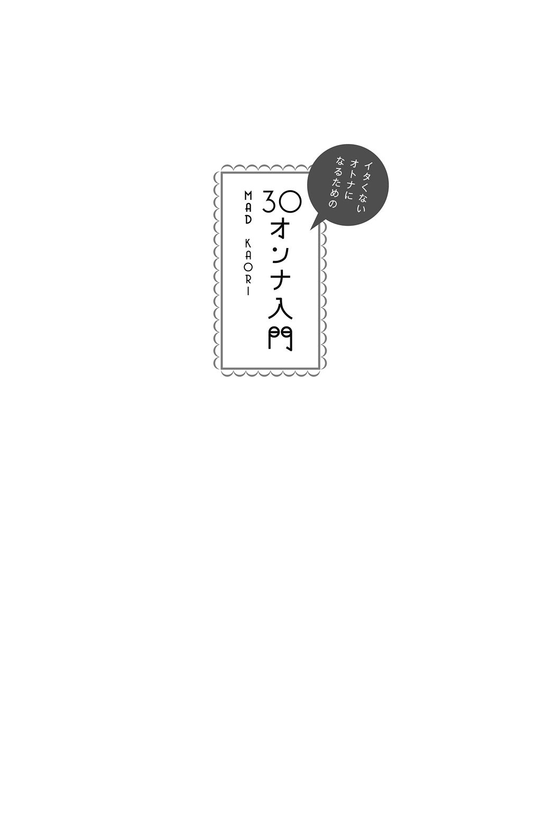
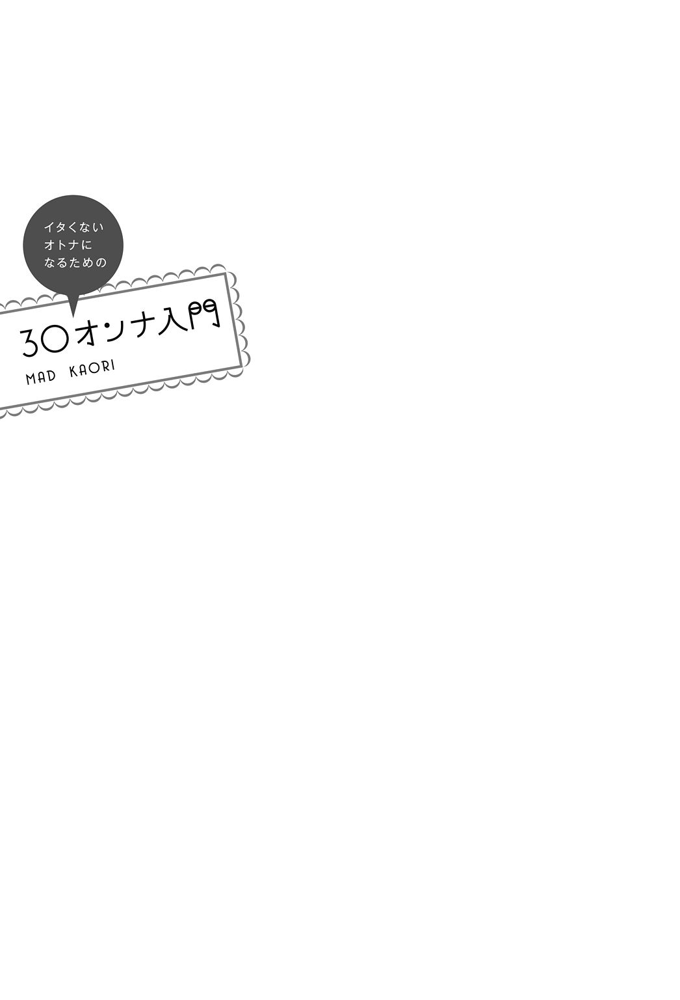
「アタシって〝かわいそう〟になっちゃったの？」
20 代ラストイヤーを謳歌する編集者トミー♀ に言われた。
「ＭＡＤさんはお嬢系私立中高一貫校出身で、いい大学も出て、いい会社に入って仕事もバリバリやってて。さらには小説を出版したことがある作家でもあって。履歴書的にはかなりイケてますよね」
履歴書的にはって、顔写真が添付されてなければじゃあるまいな？
「まさに〝華麗なる履歴書〟の持ち主です！」
華麗って...アタシが!? まさかの評価にびっくり。
だがしかし、団塊ジュニアのちょい下・世代。小学校高学年から文句も言わず受験戦争に参加。辛勝。大学は一浪で、教職を取得してない教育学部卒はビミョーだが、一応、広末涼子の先輩。超氷河期といわれた就職活動で揉まれた末、マスコミ業界の一端を担う今の会社に、総合職でかろうじてもぐりこんだ。そのまま何とか12 年勤続。〝一応〟が多いが、第三者からみるとそれなりにイケてるほうなのかもしれない。
「そんなことないよぉ～～」
言葉とはうらはらに、満更でもない表情を浮かべるアタシ。そしたらば、トミーが声を潜めて続けた。
「...そんな華麗なる履歴書の持ち主的に、30 代ってどうですか？」
ん？ 笑顔がかたまる。イマイチ質問の意図がよく分からない。
「ＭＡＤさん、35 歳ですよね。履歴書的には20 代となんら変わらないのに、30 代になった途端、周囲からの扱いが変わったりしませんでした？」
ん？ 眉間にシワが寄る。
身構えたアタシを恐る恐るうかがいつつ、トミーは語り出した。
「実は私...来年誕生日が来て30 歳になるのが怖いんです。結婚の予定もないまま仕事ばっかりしてて。20 代はそれでよくても、さすがに30 代になったらこのままじゃいけないんじゃないかって。...30 歳になる前に、何か一つくらい成し遂げとかないとマズイ気がして。...今、めちゃくちゃ焦ってます」
はぁ...。
「私だけじゃなくて、30 代になることをモンスターにでもなってしまうかのように怖がっている20 代独身女子、周りにも沢山います！」
おい。アタシはモンスターなのかい。そんなアタシの不満顔にビビりながらも、トミーは「ぶっちゃけ、30 代になって以降、哀れみの視線を感じたりしませんか？ 勉強も仕事もできるのにまだ独身なんだぁ、イタいなぁって目線...、向けられたりしませんか？ ...私、イタい30 代にだけは、なりたくないんですっ!! 」と続けた。
入社12 年目。
それなりのトラブルや挫折、恋愛や失恋、カン違いや調子に乗った時期も経た35 歳。20 代女子の失言に腹を立てるより、その真意に脳ミソが反応してしまう。
トミー曰く、〝それなりの履歴書〟の持ち主のアタシ。
〝イタい30 代〟って一般論ではなく、つまりアタシのことを言っているのよね...？
えっ...！ アタシに〝イタい感〟が覗いてるってこと...？
もしかして、アタシって可哀相な30 代なの...!?
これがすべてのきっかけだった。
トミーの言葉を機に、アタシは気付かぬふりをしてきた多くの事実に思い至ったのだった。そう言えば、友達や同僚と恋愛話にいそしんだ最後に、「でもＭＡＤは仕事が好きなんだもんね」と言われることが増えた気がする。これって、20 代の頃はあまり聞き覚えがないフレーズだ。〝でも〟ってなんだ、〝でも〟って！ それに、仕事は嫌いじゃないけれど、そこまで好きだと言った覚えもない。...にもかかわらず〝仕事好き〟と言われるのは、もしかしたら慰められているのではなかろうか。それに、結婚してる友達から、やたらと「ＭＡＤは強いから」と言われることも増えた。
確かに、仕事も恋愛も多少のトラブルは一人で解決できる...ようになってきた。だけどみんなが言うほど強いオンナのつもりもない。なのに「私は無理だな。家族いないと淋しくて」とか続けられてしまいがち。アタシだって淋しいって感情くらい持ってるっつーの。だけど、〝独身30 代バリバリ仕事人〟ってだけで、強いオンナに見えるらしい。
そしてアタシは、驚愕の現実にたどり着いたのだった。
どうやらアタシはいつの間にか、強くて可哀相で、気を遣われる、イタいモンスターになっちゃったのだった。
でも、よく考えて欲しいのデス。
履歴書的には20 代の頃と何一つ変わってない。変わったのは年齢だけ。
そう、変わったのは20 代が30 代になったことだけなのだ。
そうか！ そうなのか!! これが20 代ラストイヤーに焦るトミーが聞きたかったことなのだ。同じように過ごしているのに、アタシ自身は何も変わらないのに、周囲の目線が変わることって...確かにある。もしかしたら「老いる」って、これまでと同じことをしても、若さがなくなった分イタく見えてしまうことなのかもしれない。
だって履歴書的には、平均プラスα の人生を歩んできたはずなのに、「35 歳で独身」ってだけで、マイナスα になっている感がある。
結婚の予定がないことも。
彼氏もどころか好きな人すらいないことも。
天職と言えるような仕事にまだ出会っていないことも。
20 代ならば、「まだまだこれから。未来があるから大丈夫！」という雰囲気が全体に漂うにもかかわらず、30 代というだけで、「結構イイ年なのにね...そろそろしっかりしてもいい年齢じゃないの？」なんて視線に切り替わる。これは怖い...！
かつて酒井順子女史が、自らを〝負け犬〟と名づけ世間に対して 下 手 に出ることを推奨されていたが、あれから10 年経つ今も、30 代の独身ってだけで変わらずマイナスを背負っているのだなぁ。
...やばい。
トミーの不安が、今さらながら自分ごととなって押し寄せる。
アタシはこれからずっと、独身でいるかぎり、〝イタいオンナ視線〟に怯えながら生きていかなくてはならないのだろうか。
だけど、１９７０年代生まれ、受験戦争・就活戦争世代をナメてもらっちゃあ困ります。ここからがこの世代の腕の見せ所だ。〝華麗なる履歴書〟が証明するように、「勉強」や「傾向と対策」は得意なのだ。百枚以上のエントリーシートを手書きして、自己分析して、超氷河期をのりこえてきたんだ。
20 代と30 代の世間からの見られ方の違い。
どうすればその違いに立ち向かえるのか。
可哀相な目線を減らすことができるのか。
アタシは、30 代独身女性の身の処し方とやらを考えてみることにした。
お見合いサイト・知人の紹介など、どんな手をつかってでも結婚を目指すもあり。
定年まで働き続けられるよう、会社で地道に仕事するもあり。
結婚するなら、それはそれ。
一人ならば、せめてイタくない独身女でありたい。
だって、いいことも悪いことも色んな経験を積んだ分、20 代の自分より今の自分のほうが成長してるって確信はあるのだ。なのに、精神的にも金銭的にも自立した30 代女性がステキじゃないなんて悲しすぎる。
だから...決めました。
アタシ、心身ともにノッている30 代女性、すなわち〝30 オンナ〟を究めます。
「ＭＡＤさん、それちょっと書いてみません？」
結局〝仕事大好き〟な、編集者トミーの目が光る。「書き終えた頃には、ＭＡＤさんの焦りも解消してると思うんです！ イタくない30 オンナになったＭＡＤさん、ステキだと思うなぁ」
トミー、それホント？ だったらアタシやるわ。書いてみせるわ！
イタくないオンナになれるなら何でもやってやるっっっ！
こうしてアタシはこの本を書かせていただくことになったのでした。
前書きが長くてすみません。
これから書き綴られるのは、30 代、可哀相目線に脅える独身ＯＬの自衛研究です。
似たような状況下にある方、その予備軍でもある迷える20 代女子たちが、30 オンナとして過ごしていく上での参考になれば、先人としてあがいた甲斐があるというもの。最後までお付き合いいただければ幸いです。
※ ちなみに、登場する人物はすべて研究過程で仕入れたあらゆる情報を具現化したキャラクターであり、実際にいる人物ではございません。
イタくないオトナになるための
30 オンナ入門
ＭＡＤ ＫＡＯＲＩ
はじめに
「アタシって〝かわいそう〟になっちゃったの？」
結婚をジョークにできなくなる感じ
会社でのポジショニング
人は見た目が９割だから
いやます不安との戦い
オンナの道はエンドレス
自分ってやつを信じてあげてもいい
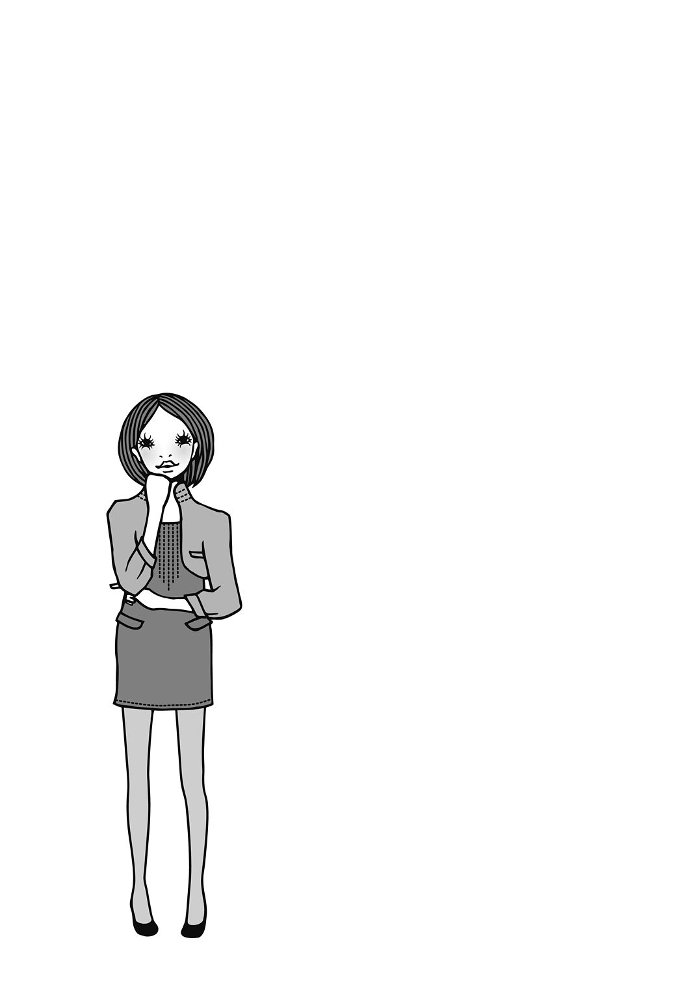
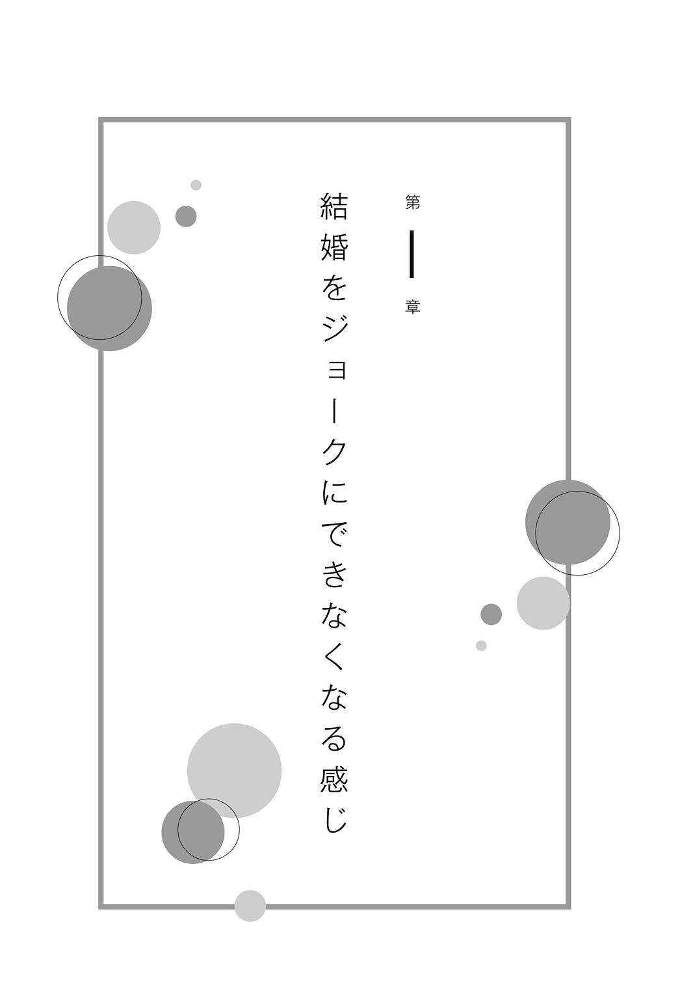
「いい男、いない？」
が口癖の同期・Ｂ子は、結婚相談所にも登録していて、周囲の友人知人に合コンのセッティングを頼み、出会いの場への積極的訪問も欠かさない30 代コンカツ女子だ。
努力を惜しまないその姿勢に、「ホントに結婚したいんだなぁ」と応援したい気持ちになる。でも口には出さないけれど、内心思ってしまっていることがある。
「その必死さ、見ていてキツいときがある...！」
Ｂ子、ひどいこと言ってホント、ごめんなさい。
だけど、イタさが気になるアタシには、見過ごすことができないポイントなのだ。
20 代だとあまり気にならないのに、30 代独身女のコンカツはなぜイタいのか。
アタシはこれまでコンカツに必死な時点で、「〝メス〟として劣性感が漂うから」だと考えていた。前に、会社でＵ課長とこんな話をしたことがある。
「食欲、睡眠欲、性欲。これらは人間の三大欲求だ。食欲と睡眠欲はないと生死に関わるが、性欲はなくたって生きていける。なのに三大欲求になっているということは、種を残すのが人間の本能だからなんだ」
一理ある考え方だ。種を残すのは、動物としての人間の本能。にもかかわらず、30 代にして独身なのは、これまで異性の本能アンテナに引っかからず、遺伝子を強く求められてこなかったからだと言えるのではないかと。結果、Ｂ子のように30 代にして必死にコンカツをしていると、〝自ら遺伝子を叩き売りしているメスである〟感を漂わせてしまうことになる。
これはイタい。それが恐怖で、アタシはずっとコンカツに二の足を踏んでいた。
ところがどっこい、社内外で耳にするＢ子にまつわる周囲の声は、アタシが考えるよりさらにずっと手厳しいものだった。
「いい年をして、なりふり構わずの割に条件が厳しい」
「まだ選ぶ権利があると思っているのが、イタい」
あぁ、ズッキンズッキン来ますね。
要はアタシが危惧していた、「若い頃に比べてメスとして劣化している」のは大前提。そこに加えて、本人に「劣化の自覚がない」ことがイタいのだという意見。劣化したもの同士でないと、相手候補にならないのは自明の理であるにもかかわらず、変わらずハードルが高いのってどうなの、と。
世間って...厳しいですね。イタさに怯えるアタシは、この現実を知り、ますます身動きが取れなくなったのだった。
だが、「ＭＡＤ、あんたって本当にメンドクサイ女ね」。
二人でご飯した際、コンカツについて切り出したアタシに、Ｂ子はこう言い放った。
「世間とかどうでもいいでしょ。私はね、ただメスとしての本能に従ってるだけよ」
本能!? これも本能なんですか!!
確かに、結婚したい、子供が欲しい、異性に必要とされたい、これらは全部本能だ。そう考えると、コンカツってのはそもそも本能による行動と言える。種を残すのが動物としての本能であるからには、出産年齢を意識せざるを得ない30 代が、20 代以上に必死にコンカツするのは、言われてみれば当然のこと。
「でしょ？ ハードルが高いだぁ？ いい遺伝子を求めるのもメスなら当たり前。私に言わせるとイタいと思われたくないとかなんとか言っちゃってコンカツにちゅうちょしてるＭＡＤは、むしろ本能が退化してる。そっちのほうがやばいっつーの」
え...。退化...？
動揺を隠せないアタシだが、Ｂ子の主張にも真実味を感じてしまった。だって動物が本能に逆らうってよっぽどのことだ。なのにアタシは、世間からイタい女だと思われたくないという理性が勝り、コンカツができずにいる。本能って本来は、そう簡単に抑えられるものではないはず。Ｂ子が言うように、草食系男子が増えたのと一緒で、アタシの本能は、弱まっているのかもしれない。
これは、まずい。Ｂ子は、イタいかもしれないが本能は正常に機能している。それに対してアタシは、ヒト科として危機的な状態にあるってこと。イタいだなんだ言う前に、本能の活性化に取り組むべきなのではなかろうか。
そうだ...コンカツしよう！
理屈が理解できれば、気持ちを納得させられるのも、ビジネスシーンであまたの経験をしてきた30 代ならではの特徴だ。生きていくための本能強化だと考えたら、コンカツへの抵抗感がだいぶなくなってきた。
てっとりばやく本能を刺激するため、男性のフェロモン臭を嗅いでアドレナリンを出すべく、汗をかいてる男性に近寄ってみることを心に誓う。
電車の中で高校生男子を見掛けたら、何としてでも近寄るぞ。
そしてさらに考えた。文明を手にした人類は、本能に従いつつも知性でコントロールすることを学んだではないか。ガツガツみっともない姿をさらしてまで食べたり、眠いからといって地べたで寝たりしないのと同じこと。
そう、コンカツも人目を意識しながらやればいいのだ。コッソリやればいいのだ。そうすれば周囲にイタいと思われなくて済む。
一見してないように見せかけて、裏で行う。これだぁ！
アタシはこうして、モテ系女子の常識中の常識、恋愛の神・蝶々様が10 年も前から言っているような結論に、35 歳にしてようやく達したのだった。
そして、いざ。コンカツという名の本能の強化を己に課したアタシは、すみやかに最近話題のコンカツバーへと行ったのだった。店に入って驚いた。
お店には15 名ほどの、年齢はいっているがそこそこキレイなオンナ達がひしめいていて、男は、なんと数名しかいなかった。しかもハゲデブめがね...。けれど、本能を強化している最中だからか、そんなオスでも貴重に感じられ、奪い合いに参加したくなるから不思議だ。
だが、さすがは劣性のアタシ。結局はオスに上手くアピールできず、参戦できないまま従業員のオスとだけ口をきいて帰路についたのだった。
翌日、「コンカツはコッソリしたたかに」と自分に10 回は言い聞かせたはずなのだが、つい会社で喋りまくってしまった。
「ＭＡＤさん、マジ笑えますね」なんて爆笑してくれつつも、後輩たちは完全に引いていた。
だからダメなんだよなぁ...。
本能の強化は、〝コッソリと〟が重要です。
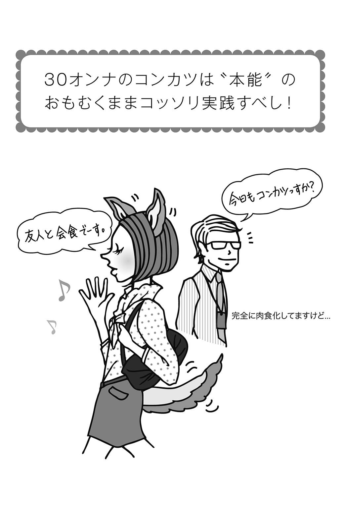
アタシには、社内に仲良くさせていただいている40 代独身のお姉様がいる。
通称・Ｈ女史に「不倫したことある？」と聞かれた。
答えづらいなぁ。だけどここは正直に。...あります。
自分だけなのかと不安になって、周囲の30 代独身女にも聞きまくってみた。そうしたら、遊んでるコも真面目なコも殆どのコが、
「昔は（20 代の頃）...ね」と答えた。ことごとく。ほぼ全員が。
でも予想外という気はしなかった。20 代の女子からすると、オトナの男の人は、何でも知っていて世間慣れしてて、同世代の男子より格段にカッコよく見えるものだ。結婚してる分、ガツガツもしていなくて。若い女のコの喜ばせ方をよく知っていて。ヒミツの匂いがドキドキ感を倍増させて。自分が他の女のコよりオトナになったような優越感が感じられて。アタシもそれで、まんまとハマった。今なら分かる。当時のアタシなんか、ちょろいものだっただろうなぁって。かつて好きだった人ではありますが、ずるい 男 性 でもありました。
余談だけど、今回調査してみて思った。世の男性の全員が浮気をするとは思わないが、「不倫経験のある30 代女性」の割合からすると、一人で何人もの女性と不倫する男性の存在を差し引いても、かなりの数の男性が浮気をするのだなぁ。
コンカツをするにあたり知りたくない現実。
略奪結婚にたどり着く人もいるが、大概の不倫は終わる。ほとんどの不倫しているコがそうだと思うけれど、家庭を崩壊させてまで、相手が自分を選ぶ日が来ないことは、ちゃんと分かっている。だから、本当の気持ちにフタをして、それを望んでないフリの強がりも覚える。それに、悪いことをしているってことも十二分に分かっている。だからこそ、「好きになった人に、たまたま奥さんがいただけ」なんて言い訳をしては、いかに純愛かをアピールして周囲に味方を求めてしまう。
派遣社員のＬちゃん（24 歳）も、現在不倫真っ只中だ。そんなＬちゃんの恋愛相談に乗った不倫経験者たちは、一様に同じことを言うそう。
「20 代はいい時期なのだから、不倫なんかで時間を無駄にしたらもったいない」
「不倫なんて、オンリーワンにもナンバーワンにもなれないの。ただ自分の価値を下げているだけ」
もしくはＨ女史のように、敢えて何も言わない。
「自分を振り返ってみても、不倫におぼれてる時期は、誰に何を言われようと、〝自分だけは違う〟って思っているから、何を言っても聞かないでしょ」
実際Ｌちゃんは、相談する一方で、最後にはこう言うのだ。
「結局〝不倫〟って思うかもしれないけど、私のはいわゆるそういうんじゃないんです。お互いにすごくいい関係で...」
分かるよ。アタシもそうだったから。
今は何を言われても、そう思っちゃうよね。
30 代独身女にとっての不倫は過去の思い出である、と言いたいところだが、残念ながらそうとは言い切れない。先述の不倫調査でも、過去のていで語りつつ、明らかに現役続行中の気配があるコも、チラホラ見受けられた。
かたやコンカツに勤しんでおきながら、不倫もしちゃうなんて、日本の結婚制度において行動が矛盾している。
特に仕事ができる、イケてる30 代ほど妻帯者から口説かれがちだ。アタシ分析によると、これは〝若くてカワイイ女のコ〟として需要があった20 代とは全く異なる理由からだ。10 年近く働いているからオトコ社会に慣れていて、口が堅くて、結婚とか面倒なこと言い出さない自制心があって、要は都合がいいオンナだから。
「私なんて、もはや妻帯者からしか必要とされないのよ...」
ため息の止まらないＨ女史なんて、先月３回、妻帯者からホテルに誘われたのだそうだ。仕事の話をすれば年上の男性はそりゃ頼りがいがあるし、家庭がある分こっちはこっちで週末に自分の時間が持てるし、働く30 代にとって不倫が楽なのも事実。自分自身が〝都合のいいオンナ〟であることに目をつぶってさえしまえば、相手を自分にとっての〝都合がいいオトコ〟と考えちゃえば、実は魅力的だったりもする。
だが「私、不倫はしたくないの」。
Ｈ女史はきっぱりと言い切ると淋しげに微笑んだ。
「目先のオトナの男性に惑ってしまう20 代と違って、30 代の不倫は頭や心ではなく身体のつながりのほうが強くてさ。しかもずるいことに男性からは終わらせず、女性側に終わる時期を決めさせるんだよね。自分から終わらせるのって、もう嫌...」
すみません。
しごく当たり前のことを書きます。
不倫はしないほうがいいです。
それはＨ女史が言うように、終わらせる苦しみを味わうからじゃありません。単なる正論に聞こえるかもしれないけれど、前述したとおり「20 代を不倫なんかで無駄にしたら勿体ない」「オンリーワンにもナンバーワンにもなれない。ただ、自分の価値を下げるだけ」だからです。これが経験者の本音です。
でも、今のＬちゃんに伝わらないように、これらの言葉を彼女たちが実感できるのは、不倫が終わってからなのだろう。
こういう言い方は自分の過ちを正当化しているようだが、20 代のオンナにとって不倫は〝通過儀礼〟だと考えると分かりやすい。オンナが一生のうちに経験する、年齢的に重要な節目にあたって行われる儀礼。
一度は通過してしまうもの。そして、通過した人にしか分からないことがあるもの。
だから、Ｌちゃんにもう一声アドバイスするなら、「自分だけは違う」なんて思わず、所詮、誰もが経験する〝通過儀礼〟だと理解して、さっさと通過しちゃいなさいってことだろうか。
不倫という通過儀礼。
オンナはそこで多くのことを学んでしまう。ちなみに、しないにこしたことはないから、現状予定のない20 代女子は、無理して通過する必要はない。
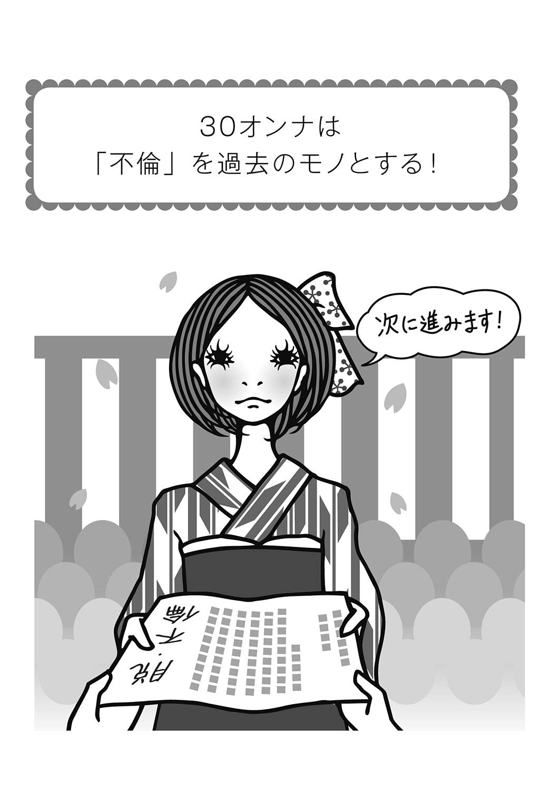
彼氏がいる方。
この項は読み飛ばしてください。
いない方。
安心してください。聞かれるのも30 代前半までです。
数年前までは、アタシもよく聞かれたものだ。
ところがどっこい日本人というのは空気を読むことに長けているので、ある一定年齢になるとこの手のことはパタっと聞かれなくなるのだ。聞いた側も気まずくなりたくないのでしょう。以上。...で終わるワケがない。
会社のＫ先輩♂ と二人、新入社員向けの研修で講師を頼まれた。大会議室で、そつなく楽しく愉快なワーキングライフを語った最後の質疑応答のお時間、無邪気な顔をした新人君♂ に思いっきり聞かれてしまった。
「ＭＡＤ先輩の仕事の様子はよく分かったんですケドぉ、それだけ働いていてプライベートってどうなんスか？」
うわっ直球。35 歳の女性相手にそういうこと聞く？ これだからゆとり世代ってヤツはまったく！ こうしてアタシは久方ぶりの〝ピンチ〟に陥ったのだった。
おそらくこの項の存在自体、意味が分からない方もいることでしょう。
実際、この話をした長年の友人・人妻Ｔ代には、「考えすぎよ。〝充実してるわよ〟とかテキトーに答えとけばいいだけじゃない」って言われたし。
だけどアタシ自身はこういった問いにどう答えればいいのか、20 代後半からかなり悩んできた。聞かれるたびにうんざりだった。ホント嫌だった。
ええ、分かってます。悩むのは彼氏がいないからです。
そしてそれを正直に答えて、「やっぱいないんだ」と思われたくないからです。
さらにドキっとしたのがＴ代の次の言葉。
「そもそもプライベートについて聞かれただけで、別に彼氏のこと限定で聞かれてるワケじゃないんじゃない？」
確かに。でもアタシ、彼氏のことを質問されてると完全に思い込んでたわ...。
「正直にいないって答えるのはダメなの？」
「それはＴ代みたいに彼氏が途切れなかったタイプだから言えることよ。...いないって答えると、哀れみの視線を向けられる気がするの。...20 代はいいんだよね。いないのは仕事に夢中だからかなって思うし。だけど30 代独身で彼氏がいないのって、周囲から見るとかなりキツい気がして」
考えすぎじゃないのぉ。と、戸惑うＴ代相手に、アタシの熱弁は続く。
「別に、彼氏がいないことはどうでもいいっちゃいいのよ。事実だし。...だけどそれを正直に言って哀れまれるのがすごく嫌なの。...それにね、〝いない〟って答えると、〝なんで？〟って聞く人がいるワケ。そんなの、モテないからに決まってるじゃない！で、そう言うと、気まずそうな顔するワケよ。だったら聞かなければいいのに！」
アタシの剣幕に、Ｔ代は完全に押され気味だった。
「...ＭＡＤが独身なのは、結婚への目覚めが遅いからだと思うけどなぁ。過去の恋バナもどこか地に足がついてないというか。いまだに結婚に〝面白さ〟とか求めてるけど、結婚って〝現実〟だってことを20 代から意識してるかどうかじゃないのかなぁ」
むむ。耳に痛いことを言われた気がするが、今回は聞き流させていただこう。
本題に戻ります。悩める同志のみなさん。お待たせしました。アタシは長年この問いと向き合ってきて、30 歳を過ぎた頃、ついに完璧な回答を見つけたのだった。
そもそも「彼氏いるの？」と聞く側の心理は、３つのパターンに分けられる。
その① 世間話として
その② あなたを心配して
その③ あなたに興味がある
「ずーっといません」という真実を告げるとモテないオーラ全開で、「仕事を大事にされている女性ってステキですよ」という慰めの言葉を期待しているようで①の場合に申し訳ない。20 代と違って、聞いてきた相手に結果として気を遣われている感が30 代独身女には切ないのだ。間違いなく哀れと思われているし。
②の場合には、聞いてきた人はきっとアタシの味方なのだろうが、親身になってくれていると思うと、あまり心配をかけないよう配慮したくなる。そんなこんなで出した結論がこれだ。
「いないんです。別れたばかりで...」
どうでしょう？ 「別れたばかり」だと、男っ気のなさを気遣われないギリギリで、恋愛という最低限の社会活動を行う真っ当な人間であることの証明もできる。まだ立ち直ってないかも感を醸せば、それ以上突っ込んだ質問をされずに済むし、伏し目がちに言えば色香も漂うような気がする。万が一③の場合にも、〝今、彼氏いません〟をさり気なくアピールすることもできる。やばいくらい完璧だと思いませんか？
これでもう何も怖くない。そこから５年、アタシは「彼氏いるの？」の問いに脅えることなくやってきたのだった。
新入社員相手にお得意のフレーズをかましたアタシは、充実感一杯で会議室を出た。
自席に戻るために乗ったエレベーター内、Ｋ先輩に言われた。
「お前、５年前から〝別れたばかり〟って言ってない？」
バレたか...。「宇宙の歴史を思えば、５年なんて誤差みたいなものですよ」
笑顔でエレベーターを後にする。...本当はもうちょいいないけどね。さり気なく数年のサバを読んでしまう己の小ささを認めつつ、自分に言い聞かせる。
冒頭にも書いたけれど、日本人は空気を読むのが好きな人種。「彼氏いるの？」なんてこと、明らかにいなそうな人には聞けないはず。しょっちゅう聞かれるってことは、「なんでいないの、このコに」ってことに違いない。そうだ自信を持とう。
そんなアタシにＫ先輩が言った。
「ま、社交辞令だから、そもそも真剣に答える必要ないけどな」
え？ まさかのパターンその④の登場ですか？
社交辞令...。
いずれにせよ、「いないんです。別れたばかりで...」で問題はない。
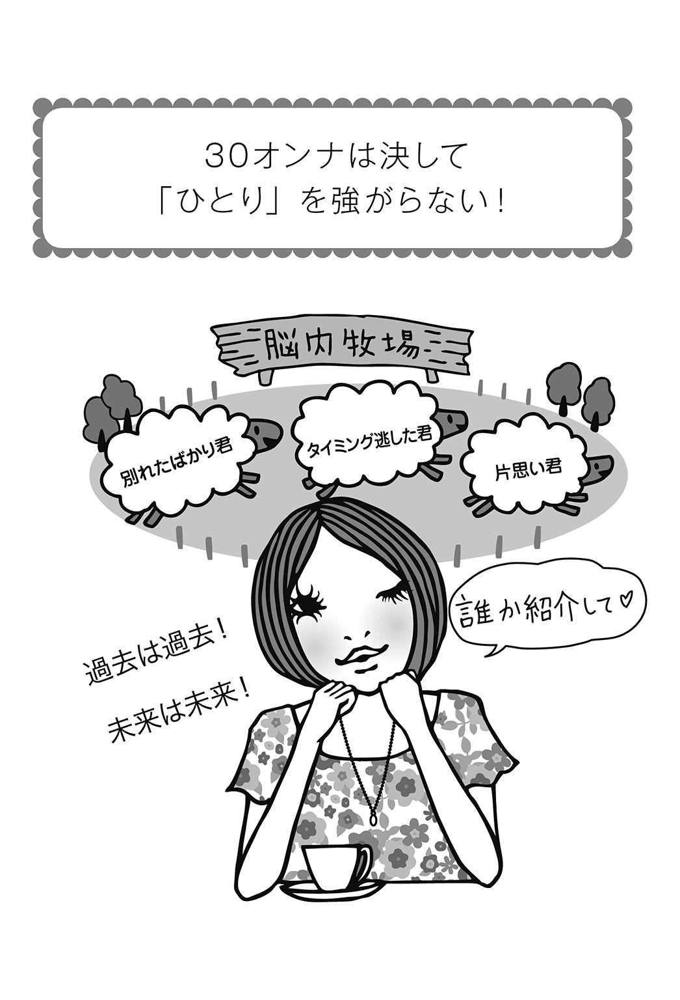
イタくないオンナになりたくて、改善を図ってみた。
オトナのオンナとして、常識人であることは必須だ。
アタシは、マナー辞典を三度音読し、ハンケチを巧みに使いこなせるようになった。
メイク・ファッションもそれなりの意識レベルが求められる。
アタシは新宿伊勢丹に駆け込み、センス溢れるバイヤーセレクトのアイテムで身を包み、全身のレベルＵＰに成功した。やっぱりオトナは質のいいものを着ないとね。
小物も合わせたトータル金額は、小娘時代の３倍はくだらない。
それに、自分の時間を豊かに過ごす趣味もあったほうがいい。
一人で行きつけるバーってものも持ってみた。
残業時間だって手を抜かない。ピンヒールをものともせず化粧室に向かい、ファンデーションのよれを直し、仕上げにグロスを一塗り。
だがしかし、鏡に向かって微笑めば...そこには誰よりイタいオンナが映っていた。
なんで？
こんなにもちゃんとしてるのに、どーして却ってイタくなってるの？
「重要な視点だわ。これがきっと、30 代独身女に待ち受ける恐ろしいワナなのよ」
一人で悩んでいても解決しない。アタシはコンカツトーク以降、仲良くなったＢ子の知恵を借りることにした。
「ＭＡＤが試みたことだけじゃなく、他の例も挙げて、共通点を探してみようよ」
やっぱり仕事ができるオンナは違う。こういう時、12 年間だてに仕事だけをしてきたわけではない自分たちをちょっと好きになる。ビジネス視点で冷静に情報を集めてみれば、見えてなかったことも見えてくる。マーケティングの仕事に従事しているＢ子は、あっという間に類似事項を挙げてみせた。
ネイルサロン通いで、ピカピカに磨かれたツメ。
毎日の半身浴。
お取り寄せをしている高級有機野菜で、週末ごとに作るオシャレ料理。
そしてそれを美しく撮影して、毎週末アップするブログやフェイスブック。
ヨガやピラティスで鍛えているのか、35 歳なのに限りなく締まったウエスト。
英語で学ぶ英国式本格マナー教室。
挙げるにつれて匂いだす、イタい気配...。
幾つか挙げた事項はいずれも、いわゆるオトナのオンナとして、手を掛けるべきところにちゃんと手を掛けている、できるにこしたことはないことばかりだ。
実際、カガミに映ったアタシは、やっておくべきことがなされていて、完璧に近い。
それなのに、なぜ。
「その〝完璧〟...って言葉が引っ掛かるのよね」
Ｂ子の脳みそがフル回転を始める。そして言った。
「...ねぇ。完璧ということは、裏を返せば〝隙がない〟っていうことじゃない？」
さすがはＢ子。アタシにも分かった。分かってしまった。その隙のなさが最大の曲者なのだ。隙のなさから、毎日の過ごし方が透けて見えてしまうのだ。
常識もあり、趣味もあり、見た目も気遣い、内面も外面もすべてに完璧に気を遣っている人。だが、それらすべてを気遣うには、時間もお金も掛かるワケで。それができる人というのは、時間的にも金銭的にも自分のペースで過ごせる人とも言えてしまう。そしてそれは、イコール、その人の人生に他者が不介在であることを透けさせてしまうのだ。
旦那の都合とか、意味分からない。
子供のために使うお金とか、未知の世界。
独身の友達とは、平日の夜しか遊ばない。
実家の雑用も、最近は特に頼まれない。
一人暮らしだと、家事もあっという間に終わる。
だから、色んなことが完璧に行き届いてしまう。
隙のない佇まいは、自分のために自分のみの判断でお金も時間も使えてしまう人であるという事実を、つまびらかにしてしまうのだ...！
つまりすべては自己満足の世界。本人にその意識がなくても、〝隙のなさ〟に、もれなく〝ひとりよがり感〟が垣間見えてしまう。
20 代の頃は、自分のことしか見えていない多少の視野の狭さがあっても、若さゆえだと許された気がする。自分の価値観を模索している途中段階だから、〝ひとりよがり〟な行動も、〝一生懸命〟と評された。だけど、30 代独身女は違う。
30 代独身女の〝ひとりよがり感〟はイタさに通じてしまうのだ。お金や時間の掛けどころがよく分からなくなって、とうとうそこ行っちゃったか...みたいな。
だって、オシャレ料理を作って毎回ブログにアップなんて、子供がいて、育児に追われていたらできないこと。飼い犬を溺愛している30 代独身女性がイタいのは、あり余った時間をそれ以外に使う術がないことが、丸見えだから。
いやはや、30 代の過ごし方って難しい。一人で生きているがゆえに、周囲に弱みを見せられず、完璧を目指したら、結果的に隙がなくなりイタいと言われてしまうのだから。
ひとりよがりからの脱却のため、アタシは世間に対し、意識的に〝隙〟や〝弱み〟を見せることにした。あえてパソコンを使いこなさず、新しいソフトをインストールするときには詳しそうな人に頼る。昔やったケースを参考にすれば上手くいくのではないかという仕事は、周囲に「あの時って...」と記憶の反芻を委託する。
いい感じ♪ と思いきやＬちゃんに言われてしまった。
「確かに隙がないと怖いオンナに見えちゃいます」
でしょう!!
「でも隙だらけのオツボネっていうのも正直メンドーです。まず自分で調べてから聞いてください」
...すみません。
今後は、１日１隙を目処に精進いたします。
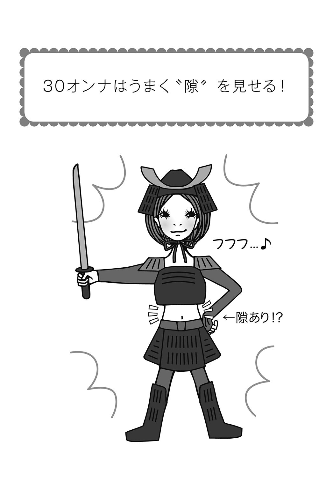
アタシは中高一貫の女子高出身である。
よく女子高出身者はオトコの人に不慣れな分、ブリッコになる、と言われがちだが、これは安易すぎる発想で、実際は真逆だと思っている。
昔からの友人を見回しても、どちらかというと、思春期を女子に囲まれて過ごしている分、本能的に〝オンナ目線〟を意識しているコのほうが多い。
オンナだけの社会において、オトコの人から「カワイイ」と思われるような行動を取ると、同性から嫌われることを経験的に知っているのだ。それではオンナ社会で生きていけない。だから６年も女子校にいると、〝オトコ目線〟よりまず〝オンナ目線〟に配慮する癖が染み付いてしまう。同性から信頼されることを第一義にするため、却ってサバサバを演じがち。
たまに共学出身の同期・Ｂ子から、「女子高育ちは子供っぽい」と怒られるが、これもオトコ目線を意識してないからこそなせる業だ。
オトコからどう思われるとか気にしてないからこそ、存分に子供っぽくふざけられる。そしてその悪ふざけが、女子同士の妙な一体感を生んだりもする。
むしろ〝オトコ目線〟を意識すると、ちょっとしたことでも媚びているように感じられ、素直にオトコの人に甘えることに抵抗すら覚えてしまう。アタシなんぞ、背が高いので中高時代、クラスで重いものを持つのはアタシの任務だった。だからこの年齢になっても、オトコの人に持ってもらうのが苦手だ。
35 歳にして、いまだにオンナ目線呪縛にとらえられているのだ。
対して、完全に〝オトコ目線〟派の女性もいる。
〝モテ〟を何より大事にして、恋愛攻略本を読み漁り、オトコがイメージするところの〝オンナのコらしさ〟を体現することにてらいのない人。オスをめぐる競合相手である同性から嫌われることを怖れず、邁進できる人。ある意味ソンケーしてしまうが、もちろん、そういう女子に同性の友達は少ない。それに、〝オトコ目線〟派は、友達が少ないせいか、必要以上に〝オンナ目線〟に苦手意識を持っているケースが多い。異性だらけの中にオンナ一人でいるのは全然平気なのに、オンナだらけの職場で上手くやれない人がその典型。そういう人は大概、「陰口ばかり言うし...」とか、「私にばっかり厳しい...」とか、オンナ社会を批判する。おそらく〝オトコ目線〟への術がオンナ社会で通用しないことを分かっているからこそ、必要以上に身構えてしまっているのだろう。若干、同属嫌悪の匂いがする。
オトコ目線を意識して生きるのか。
オンナ目線を意識して生きるのか。
アタシはこれまで、特定のオスをキープしたのちは、〝オンナ目線〟を意識して生きるほうが、のちのちを考えるといいと考えていた。
だって、平均寿命から考えると男性が先に天寿を全うするわけで。老人ホームを見ても、おばあちゃんだらけ。となると、同性に嫌われるオンナは楽しくない老後を過ごさなければならなくなる。それってどうなのよ、と。友達のいない生活が耐えられないアタシは、自身の〝オンナ目線派〟を是としてきた。
だけどここへ来て、いい年をして〝オンナ目線〟にとらわれすぎているのも、妙に肩に力が入っていて自由じゃない気がしてきた。
でもだからといって、〝オトコ目線〟だけを意識している女性に憧れないのも事実。ある一定の年齢にあるにもかかわらず、同性に嫌われるオンナ、同性とうまくやれないオンナってのも微妙すぎる。
そう、アタシが目指すところの30 オンナは、オトコともオンナとも上手くやることができる人なのだ。
為す術は簡単で、必要以上に身構えず、性別に関係なく、人として誠実に本音で接すればいいだけのこと。そうすれば、〝オンナ目線〟も〝オトコ目線〟も、どちらの呪縛からも解き放たれることができる。アタシの場合、元々〝オンナ目線〟は得意だし、これまで散々オトコ社会で揉まれてきただけに、オトコとの付き合いも習得しつつある。ってことは、ちょっと意識を変えるだけで、オトコに対してもオンナに対しても〝性を超越した存在〟になれるってことだ！
結果、アタシの心は尼さんのように澄み切っている。
オトコとかオンナとか関係なく、人類愛で心は満ちている。我ながら完璧だ！
と、ニンマリしていたら、事件は起きた。
空気は読むのに、先輩への気配りには欠ける会社の新人君♂ から聞かれたのだ。
「ＭＡＤさんって、男っ気全然ないし、性に対してスーパーフラットな雰囲気ですけど、もしかしてレズなんですか？」
なるほど。そう来たか。同性愛者の皆様。差別の意味はないので、どうか誤解なさらないでください。ゲイがどうのとか、レズがどうのとかいうことじゃないのです。
だけど、対外的に同性愛者だと思われたら、今まで以上にモテなくなるのは間違いない。それだけは避けておきたいのです。
友人女子の皆様。アタシ、いいオトコがいるときだけ、ちょいオトコ目線派にシフトするかもしれませんが...しばし、見逃してください。
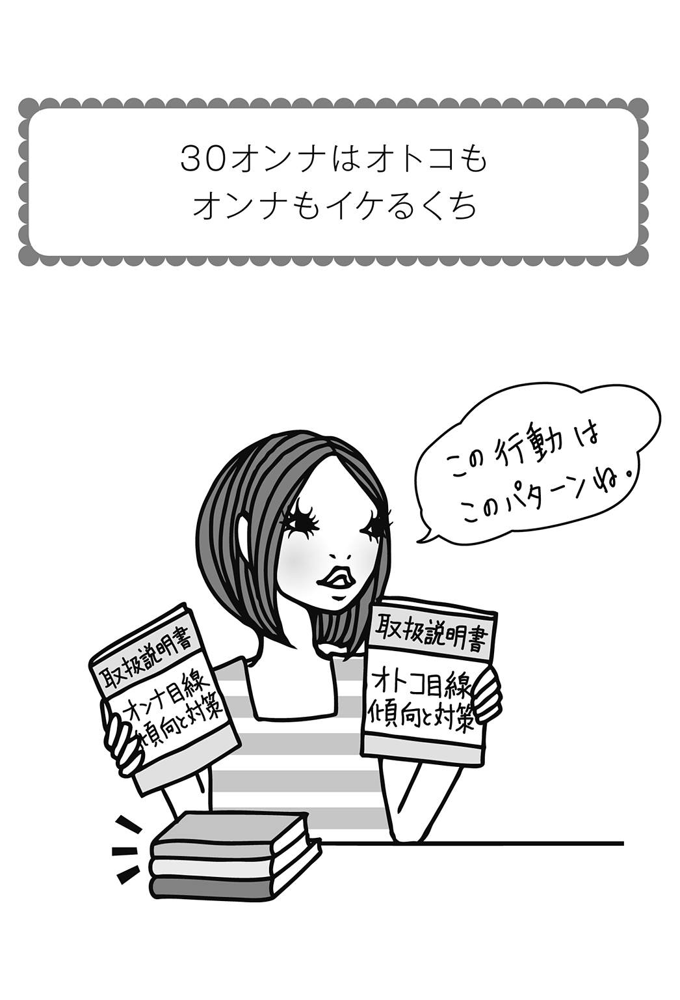
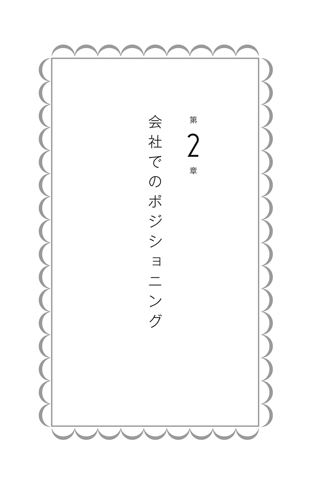
「仕事がない人生なんて考えられないでしょ」とは、二児の母をしている専業主婦の友人Ｔ代が、仕事のことを熱く語るアタシに思わず発した言葉。むむ。中学からの付き合いだけあっていいところをついている。
でも。嫌いじゃないけど、そこまで仕事人間のつもりはないんだなぁ。仕事は、楽しい。だけど、出世して部長や社長になりたいっていう野心もないから、そこそこ評価されていればそれで満足なところがある。トラブルを抱えると、がっつり落ち込んで、「もう会社なんか辞めてやるぅ！」と叫んだりするし、亭主関白風男子に恋をすれば、「アタシってホントは尽くすタイプなの」なんて血迷ったこと言い出しちゃうときもあるもの。
もちろん入社したばかりの自分より、今のアタシのほうが好きなのも本当だ。だって、学生生活では出会えなかったような色んな考えの人と出会えるし、失敗して怒られれば落ち込むけれど、上手くいった時の喜びったらないし、サラリーマンだとそれを分かち合う同僚もいるし、何より、仕事を通して自分が世間に必要とされている感じ、役に立っている感じって堪らない。
仕事がもたらす充実感はアタシに限ったことではなく、どんな職種であっても、多少の差異こそあれ、感じられることだと思う。だけど、それだけでやっていられるのは、20 代までではないかと。これは、夢中になって仕事をしている20 代女子からすると聞きたくないことかもしれない。でも、10 年も働いていると、自分じゃなくてはならないことなどそれほどないと知り、正直飽きてくることもあるのです。
以前に、〝もう仕事イヤ〟とありがちな愚痴をこぼしたら、会社の同期♂ に、「オレもイヤだけど、家族がいるからなぁ。仕事は好きとか嫌いとかじゃなくて、生活のためだから」と言われたのだが、アタシも同じ。現に、養ってくれる相手もいないワケで...。生活のために仕事をしているという気持ちも、半分は本音なのだ。
ただ、アタシってば見栄っ張りでプライドが高い。
「仕事が大して好きでもないのに、この人、仕事しかない人生送ってるの？」とだけは思われたくないから、仕事好きの〝フリ〟をすることにかけては自信がある。もはや、長い付き合いのＴ代すら騙せちゃうベテランの領域だ。
〝食べていく＆楽しいから〟が、アタシが仕事をする第一義だが、もう一義として〝安心感を得るため〟というのもある。気が付けば、中学＋高校＋大学の年数より、勤務年数のほうが長くなってしまった。35 歳で12 年間仕事してるんだから、要は人生の３分の１を〝サラリーマン〟しているということになる。
それがどういうことかというと、〝ＭＡＤ ＫＡＯＲＩ〟ではなく、〝○○ 社のＭＡＤ ＫＡＯＲＩ〟でいる時間のほうが長くなってきたということだ。どこかに帰属する、肩書き付きの生き方に慣れてきたということ。
〝ライナスの毛布〟という言葉をご存知だろうか。
漫画『ピーナッツ』に登場する幼いライナスは、いつも肌身離さず毛布を持っている。毛布さえあれば、ライナスは安心できる。それから転じて、人が物などに執着している状態、それがあることで安心感を得られる状態を指す言葉だ。
90 年代に放送された傑作ドラマ『ぽっかぽか』（深見じゅん氏の原作マンガも最高！）で、お気に入りの熊のぬいぐるみを失くし落ち込む娘を見ながら、父親が、自分にとっての〝ライナスの毛布〟は、実は会社なのかもしれないと感じる話があった。これには、いたく同意してしまった、どこかに帰属することで、得られる安心感ってある。
定年鬱というものが最近はあるらしいが、毎日行く場所があり、必要とされる仕事があるというのは、人間の精神安定に大きく寄与するような気がする。
だけど、その一方で思うのです。
20 代で仕事に夢中になっている後輩たち、そして、30 代独身女の皆さん、仕事は生き甲斐にはならないのデス。というより、生き甲斐にしてはいけないのデス。
一社員として会社を支えてはいるが、経営権などを持たない以上、自分の努力とは関係ないところで倒産の可能性はあるし、そうなると会社は、あっさりなくなる〝ライナスの毛布〟なのだ。今は、会社がある限りヒマで苦しむことも、話をする相手がいない淋しさに苛まれることはない。だけど、それも大概は60 歳までのこと。病気になった時に、家族のように心をケアしてくれる存在ではないワケで...。今は鳴りっぱなしの会社用の携帯も、いつかは返納する。連絡を取る必然性のない人とはパッタリ途切れるでしょう。だから、いつかはなくなる〝ライナスの毛布〟。それを生き甲斐にするのは、リスクが高すぎる。所詮、仕事は仕事。上手くいかなくても命をとられるわけじゃない。裏を返すと、命をかけるほどの仕事なんて、多分ない。20 代のうちは会社人生もまだ長くないからいいのだが、30 代になると、この割り切りを常に頭に置いておかないと、つい仕事にかまけることをプライベートの非充足の逃げ道にしてしまいがちだ。仕事は安心をくれる「保険」。この距離感、大事だと思う。
「けどなんだかんだ言っても、ＭＡＤはすごく生き生きと仕事している気がするよ」
繰り返すＴ代に本音で答えてみた。
「アタシは家庭も子供もないからさ。仕事くらいしかすることないんだよね」
Ｔ代が黙り込む。やばっ、重たすぎた？ と申し訳なく思っていたら、予想外の言葉が返ってきた。「...私は仕事してないから、子育てくらいしかすることないや」
約四半世紀の付き合いだ。見栄もプライドも、二人でいると関係ない。アタシにとっての〝ライナスの毛布〟が仕事であるように、Ｔ代にとっての〝ライナスの毛布〟は子供なのかもしれない。成長し親離れする日が必ず来るから、やはりやがてなくなる〝ライナスの毛布〟。
「○○ ちゃんのお母さん、と呼ばれることに慣れちゃうと、Ｔ代という存在がどんどんなくなってくるんだ」
それも分かる。○○ 会社の×× さんって呼ばれ続けることと、実は似ている。だけど、子供を育てたり家庭を紡いだりすることと、仕事をすることは、同列には置けないよ。前者は、命をかけるほどのものだと思うから。オシャレだったＴ代が自分より子供の服を優先してたり、友達同士で盛り上がっていても、目の端で子供の様子を見守っていたり。
そんなＴ代は、やっぱりスゴいと思う。
「子育てしたことのないアタシが偉そうに言うことではないけれど、子供は、保険じゃなくて生き甲斐だよ」
「仕事バリバリやってるＭＡＤにそう言ってもらえると、嬉しいな」
何でも話せるオンナ友達は、30 オンナの宝物だ。
こればかりは保険がきかない。
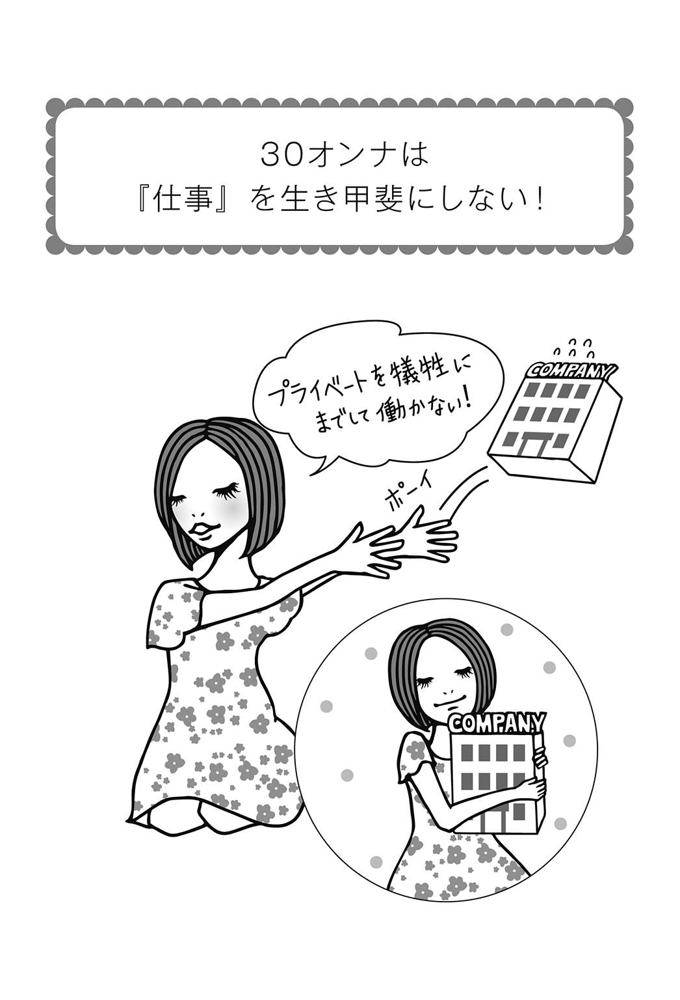
20 代半ば、２年半ほどある取引先を担当した。
そこの担当を外れることになったとき、非常によくしてもらった先方の社員さん♂ に聞かれた。
「お前さ、最後だから正直に言えよ。うちの担当をしてた２年半の間、うちの会社のヤツ何人と付き合った？」
正直に、「ゼロですが...」と答えたら、「反省しろ」と言われた。
「お前、それは落ち込むべきところだぞ。...本当に誰にも口説かれなかったのか？」
「...はい」
「...ま、気にするな。お前は、仕事ができるから大丈夫だ」
大丈夫って何が？ 明らかに最後は気を遣われた気がする。
ちなみに彼の名誉のために言っておくが、セクハラとかじゃなく、彼の結婚式にも参列するほどかなり親しくさせていただいていたので、「仕事だけのオンナになるなよ」と本気で心配してくれていたのだと思う。
今思い返しても、社外の人にまでそう言わしめるくらい、20 代のアタシは職場で〝オンナ〟を消していたのだった。
昔のドラマでよくある台詞。「あいつオトコ探しに会社来てんだよ」
20 代の頃は、会社でそう言われるのは不名誉なことだと感じていた。だからこそ、「アタシはそうじゃありません」オーラを必要以上に出しながら仕事をしていた。
でも最近になって気付いたことがある。
絶世の美女ではない、もしかしたら平均の凡女でもないアタシが一目ぼれをされることは、まずないと言っていい。だから恋をするには、人柄を知ってもらうしかないワケで...。となると、職場って結構大事なんじゃないかと。
だって、合コンやらパーティーなどで初対面の人と知り合って、人柄を知ってもらって、好感を持ってもらって、結婚にこぎつけるのって、道のりとしてはとても長い。
そもそも二度目に会うところまでたどり着くのが、まず大変。
アタシ、ここらで職場での立ち振る舞いを見直してみるべきなのではなかろうか。
...そんなこんなをＫ先輩に相談してみた。
「オレがお前と合コンで出会ったら？ そんなの決まっている。お前と積極的に二度目に会う理由はない」
Ｋ先輩、その口の悪さ、いつか刺されますよ...。
「長年一緒に仕事をしてきた経験上、お前がいいヤツなのは分かってる。そんなお前をカワイイと思うヤツもいるだろう。だけど合コン向きではないのは確かだ」
腹は立つが、第三者の意見は、迷いを断たせる力がある。
となるとやはり、一目ぼれしてもらえる人間ではない以上、内面に好意を持ってもらうしかない。そんな人にとって、24 時間のうち最低でも８時間は過ごす会社は、めちゃくちゃ大事な場所ってことなのだ！ しかも仕事をしつつ男探しもできるから、時間も有効活用できて一石二鳥。それに、唐沢寿明と山口智子、反町隆史と松嶋菜々子、小雪と松山ケンイチ、絶世の美男美女だって実は職場恋愛で結ばれている。はたまた、「会社にオトコ探しに来ているのか！」なんてことを言いがちな中高年のオジサンたち。よくよく聞いてみると、奥さんは元同じ会社ってケースが少なくない。なんだ、結局「オンナ探し」に会社に来てたんじゃん。
決めた！ アタシ、これから会社にオトコ探しに来ることにします！
そんな宣言とともにアタシは、30 を越えて「ビジネスとプライベートは別」なんて妙に肩に力が入っている感じが、逆にイタいということにも気付いたのです。取引先の社員♂ さんの、「反省しろ」にも、そのニュアンスが含まれていたに違いない。自省も含め30 代は、そこまでかたくなにならなくてもいいんじゃないか。
それに20 代の頃は、オトコ探し感が前面に出ると、同僚男性から仕事仲間として認められにくいときがある。
それは企業がオトコ社会色をまだ残す以上、無視できない事実。
だけど、30 歳を過ぎて思った。経験と実績が伴いはじめたからか、必要以上にそこを気にしなくても大丈夫になってきたのだ。多少オンナ度が出ても、ちゃんと仕事仲間として対峙できるようになる。
だから30 代になって、会社での居心地はどんどん良くなってきた。これは20 代のガンバっている女子たちには朗報でしょ。
30 オンナのみなさん、安心して、職場でオトコを探しましょう。
ただし、１点だけ注意を。
別れた後のことは考えておきたい。
あまたの社内外恋愛を経て、独身オンナの諸先輩、会社にも沢山います。本人が意図するしないにかかわらず、周囲が勝手に気を遣う。そして、気を遣われる存在というのは、やっぱりイタいんですよね。これは避けたい。基本は、コッソリ。これだけは守りましょう。
だからね、取引先の社員♂ さん。
２年半の間何もなかったと言いましたけど、そこはホントのところは内緒ですから。
「つまらない見栄、張るなよ」
...Ｋ先輩、ホントいつか刺しますよ。
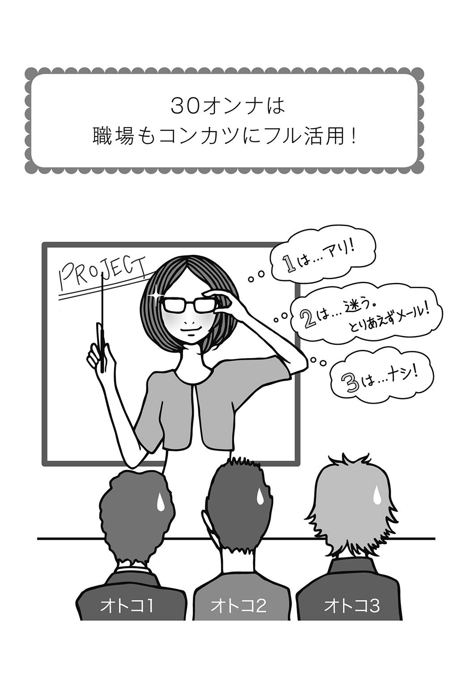
仕事でミスをした。
いや正確にはミスではない。交渉が上手くできなかった。その報告をＵ課長にしたら「お前は、相手に対してバカになれないからな」と言われた。怒られている途中なのを忘れて、思わず「普段はもっと頭を使えというのに、何でバカなんですか」と尋ねてしまった。
「意味が分からない時点で、生粋のバカだ。バカなのにバカになれない、大バカだ」
と更に怒られた。
落ち込むアタシを、Ｈ女史が呑みに連れ出してくれた。
「...どういう意味だと思います？」
Ｕ課長の言葉が気になっていたアタシは、Ｈ女史に今日のやり取りを全部話した。
黙って聞いていたＨ女史の口から出て来たのは、想定外の質問返しだった。
「白馬の王子がいないのは知ってるよね？」もちろん知っている。
「理想の上司がいないのも分かってるよね？」トーゼン分かってる。
若い頃はいると思ってた。出世争いとかには興味がなくって、弱きを助け強きに媚びない。仕事ができて、相談には乗ってくれるけど、任せてくれるところは信頼してくれて、だけど責任は取ってくれる人格者。そんな人が上司だったらいいなぁ、なんて。そんなものは幻想だとお腹の底から理解したのは、20 代の後半だった。完璧な人間がこの世に存在しないのと同じ。良い上司になろうと努力している人は沢山いるが、思い描く理想の上司は、所詮、想像上の生物だ。
「じゃ、完璧な自分なんて有り得ないのも当然、分かってるよね？」
「！」
ドキっとした。
働く年数が増えると、山ほどの失敗やトラブルを経験して、その分ちょっとずつだけれどできることも増えてくる。けれど、会社や部署に後輩も入ってくるから、〝できるようになったこと〟以上に、〝やらなくては〟と思うことも増えてくる。いや〝できていたい〟と思う、自分へのハードルが高くなっていくと言ったほうがいいかもしれない。
こんなに一生懸命仕事をしているのだから。
こういうことができるのが仕事ができるってことだから。
色んなことが見えてくるにつれて、理想の上司を思い描いたように、〝こうありたい〟〝こうできるはず〟という理想のアタシができてしまう。怒られたり失敗したりして落ち込むのは、思い描いた理想のアタシと現実の自分のギャップを思い知らされるから。完璧なんて有り得ないことだし、白馬の王子や理想の上司がいないことは分かってるのに、それでもどこかに周囲から「完璧」だと思われたいアタシがいる。
それが満たされないと、プライドが傷ついてしまう。そして落ち込む。
「努力しているからこそだと思うわよ。頑張っている分、周囲から〝理想的な人〟だと思われたくなっちゃうのよね。評価されたくなっちゃう。...それは、まさに元・優等生病よ」
冒頭でアタシは「ミスではない」と わ ざ わ ざ 書いた。
これも、変なプライドがあるせいだ。
「ミスではないって分かってます。自身の能力を冷静に見極めていますから」
ってことをＵ課長にアピールしたのだ。それが分かるくらいアタシは賢いですって。相手に対してバカになれないというのは、つまりそういうこと。元・優等生病とはよく言ったものだ。クラスの平均点はどこなのか、どうすれば評価されるのか。仕事の本質ではなく、そういったことばかりを意識してはいまいか。
それを指摘された気がした。
Ｕ課長やＨ女史に言われて気付いたが、それは無駄なことだ。無駄というより、意味のないこと。だって自分で自分のハードルをあげてしまっているだけだから。仕事をしていく上で、周囲から「しっかりしてる理想的な人」だなんて思われる必要はない。きちんと結果さえ出せば、それでいいのだから。
もう優等生はやめだ。
バカになろう！ 稀代のバカになってやる！
こうして、アタシの猛烈な「バカになる」ための研究がはじまったのだった。バカになるには、最低限持っておかなくてはならない能力があるように思う。
それは次の３つだ。
● 要点を押さえる力
概して女性は細かいことに目が行きがちだ。だが、実際にはポイントだけ５割押さえられていれば、ほぼＯＫなのだ。枝葉に掛かりっきりになる余力があるならば、周囲観察に目を向けておくべきだ。それが次につながるし、俯瞰した視点を維持することで、大きなトラブルを防ぐことにもなる。
● リカバリー力
万が一何かが起きてしまっても、解決する術を見つけ、実行する力があれば、何とかなる。年齢があがるにつれて、後輩に仕事を任せることも必要になる。そうすると何かあってから後輩から相談されるケースが増えるだけに、いざという時、この能力がないとどうにもならない。
● 油断させる力
〝しっかり者に見えたい〟というのは自信のなさの裏返しかもしれない。入り口のハードルを下げておき、お気楽な雰囲気を持っておくほうが、仲間の力を引き出すことにもなるし、敵から無駄に攻撃されずに済む。いざという時にさえ機能すれば、それでいいのだ。
うーむ。これって、20 代から意識しとけば30 代には身についてたかもしれないなぁ。真面目に過ごしすぎた過去の自分がうらめしくなる。失敗がまだまだ許される若いうちから、各種のバカのなりかたを鍛錬しておけばよかった。一生懸命さだけで乗り切れる20 代と違い、30 オンナは「バカになれるか」どうかが、重要なのだ。
敬愛するＨ女史に、いそいそと研究成果を報告する。
「コツはつかんだので、アタシがバカになる日も、そう遠くはないと思うんですよぉ」
Ｈ女史は、アタシの頭を撫でつつ言った。
「ＭＡＤちゃん。真面目に〝完璧なバカ〟を目指してる時点で優等生すぎるわ。全然バカになれてないわよ」
...バカになるのも簡単じゃない。
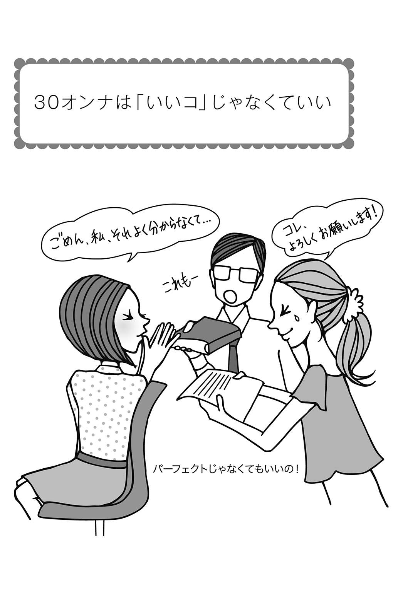
うちの課には、「ゆとり世代ですけど、何か？」な新人君♂ と、会社にカラコンをしてくることに抵抗のない24 歳・派遣社員のＬちゃんがいる。二人とも、口のききかたには、多少の、いや、かなりの難があったり、仕事のスタンスも、アタシからは考えられないことばかりだけど、悪いコたちじゃあない。
半年前にはアタシのことを、「32 歳くらいに見えますよ」って言ってくれたし。
この二人に限らず、年齢があがるにつれて、会社にはかなり年下人口が増えてきた。
そんな後輩たちとご飯を食べに行くことがある。...お会計の瞬間が苦手だ。
① おごる
② 完全に割り勘
③ 多少多めに出す
こんなこと、後輩が少ない20 代の頃は、あまり悩まなかった。
だけど、30 代になってそれなりの立場やお給料をもらえるようになってきて、後輩たちとはどんどん年齢差が開き出してから、妙に気になるようになってきた。明らかにアタシのほうがお金を持ってるし。上司と部下ではないが、先輩と後輩だし。
正解不正解の判断は、何をもってゴールとするかによって変わるが、アタシとしては、後輩から〝ウザいと思われない〟を最終目的にしたい。
先輩として尊敬されたいとか、おべんちゃら言って気持ちよくして欲しいとか、いいカッコしたいとか、そういうのはいりません。後輩からチヤホヤされたいなら、お金は必須。彼らにとっては接待ですもの。自分自身が会社のおじさん達とご飯に行く時に置き換えて考えてみれば分かります。
アタシが求めるゴールは、あくまで「ウザいと思われずに、後輩と友達になるにはどうしたらいいのか」だ。
だって、年齢があがるにつれて後輩は可愛くなってくる。フツーに仲良くしたくなってくる。だけどアタシ自身は若い頃、やたら距離をつめてくる先輩をウザいと感じたことがあった。その経験がアタシをひるませるのだ。彼らに煙たがられず、〝友達になってもらう〟には、一体どうしたらいいのだろう。
ちなみにアタシは、先輩とご飯に行ったら大概おごってもらってきた。
だったら自分も同じようにおごればいいようなものだが、毎回おごってもらうとなると、後輩からも誘いづらくなるのも事実...。ウザくない好きな先輩であっても、アタシからは誘えないが、誘われると断れない関係だった。そうなると友達とは言えない。であれば、②の「割り勘」か③の「多めに出す」を選択するしかないのだが、ものごとはそう単純でもない。
「おごってくれないなんて、年上なのにＭＡＤさんってケチくさい」と言われるのだけは避けたい。だから悩んでしまう。
思い切って、Ｌちゃんに率直に聞いてみた。
「おごるとかおごられるとか、どっちでも良いです。もちろん出してくれたら嬉しいけど、幾ら出してもらっても、ムカつく人とはご飯なんか行きたくないし」
なるほど。
「おごってくれたからといって、その人を好きになるワケじゃないのは、ＭＡＤさんだって分かるでしょう」
ですよねぇ～。
ちなみにＬちゃんがウザいという先輩は...
「説教する人。なんか、アドバイスとか思ってるみたいだけど、うるさいっつーの。こっちが相談したら教えて欲しいけど、何も言ってないのに色々言われると、ひたすらムカつく」らしい。
あの～、それは自分のようになってもらいたくないっていう親切心で、つい言ってしまうだけで、悪気はないんじゃないかと...。
「時代が違えば状況も違うんだから、そんなの参考にならないですって。あと、昔話と自慢話は、絶対にＮＧですよね」
...アタシ、これまでかなりやってきちゃった自覚ありなんですけど...（汗）。
不安でＬちゃんの顔が次第に見られなくなってくる。
けれど本題だけは何とかここで解決しておきたくてＬちゃんに縋りつく。
お金についてはどうしたらいいでしょうか。
「あのさＭＡＤさん。友達になりたいんでしょ？ 友達ってのは無理なく一緒にいられる存在じゃないの？」
ハイ、そうです。
「だったら簡単じゃん。お財布に余裕があるなら、おごってあげたり多少多めに出せばいいし、余裕ないなら割り勘でいいじゃん」
ハイ、その通り。まさにその通り。
「ＭＡＤさんが若い頃とは時代が違うんです。彼氏とデートだって割り勘世代なんですから。...ＭＡＤさんって仕事はできるのに、肝心なところダメだよねぇ」
肝心な時、意外と頼れる後輩・Ｌちゃんなのであった。
ちなみに「後輩の可愛さがまだ分からない」というＢ子は独自の視点で後輩と接している。子孫も残さず、家族もいない30 代独身女にとって、後輩は未来の会社を支える大事な存在だと考えるようになったというのだ。
要は未来の企業年金ということ。
かつ、同世代は家族を持ちはじめて、平日夜も週末もなかなか遊んでくれないから、遊び相手になってくれる若手は非常に大事。
年齢が違う人とのお喋りは、脳や心にたくさんの刺激もくれる。
そう思えば、仕事が多少不真面目だろうと、言葉遣いが間違っていようと、机が隣同士で書類などによりスペースをかなり侵食されようと、調べれば分かることを何度も何度も聞かれようと、笑えるし、許せるし、気にならないとのこと。
「〝この人、友達いないのかな〟って思われたくないから、年下誘うのは３ヵ月に一度にしてるけどね」
後輩のみなさん、我々、年は重ねてるんですが、結構小心者なのです。
お嫌でなければ、みなさんからも誘っていただけると助かります。
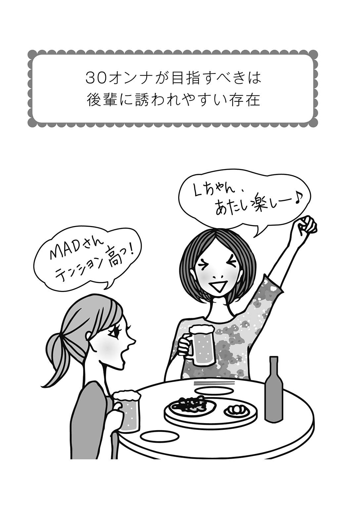
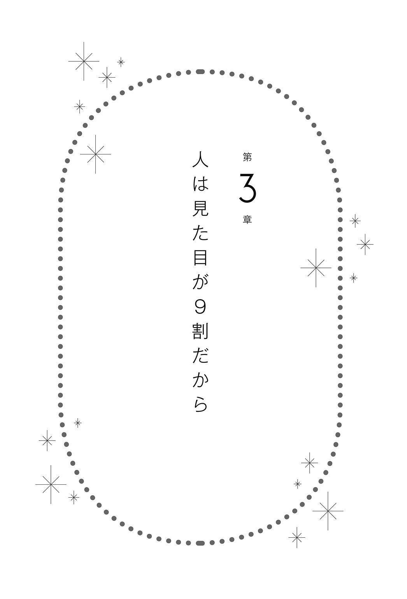
「大丈夫だよ、キミは十人並みだから」
これは社会人１年目の頃、隣の課のＭ氏から言われた言葉。思わず条件反射で、
「ありがとうございます、頑張ります」
と身につけたばかりの営業スマイルを引っ張り出してしまったが、今から思うと、怒ってもいい場面だった気がする。アタシは、ま、そんな感じのポジションを35 年歩んでいる、そういう女子だ。
いやしかし、あれですね。
明治・大正・昭和の映像なんかを久しぶりに目にすると、平成になって、確実に日本人の足は長くなり、顔は小さくなり、美人が増えたと思いませんか？
やっぱり、あれですかね。
木の上の葉を食べたいという先祖の念により、キリンの首が伸びていったように、鏡を見ては大根足と面デカを嘆いてきた団塊世代の執念が、遺伝子に組み込まれ、子供達のスタイルを変えたっていう感じですかね。
ふと世間を見回せば、キレイな人の多いこと！ うちの母が、産婦人科で、「せめて十人並み！」と祈願しながら息む姿が、瞼に浮かんでは消える。
母よ、ありがとう。けれど、もう少し上を目指してくれても良かったのに。
ってな話をしていたら、週３合コンを欠かさないＫ先輩に言われた。
「美人が増えたんじゃない。ブスが減っただけだ」
はい？ Ｋ先輩、今、なんと？
「世の中には、百人いたら百人から、〝美人〟と言われる人がいる。いわゆる〝上の上〟にあたる人たちだな。俺はそこを目指して狩りを続けているから分かる。オトコから見て、特上のオンナの数は決して増えてない。週３で合コンやっていて、１ヵ月に一度出会えればいいほうだ」
はぁ...。
「だがな、まぁまぁかわいいかな、っていうコの数は、確実に増えた」
なるほど。だてに遊んでないだけに、その言葉につい信憑性を感じてしまう。
だけどＫ先輩、ということは、やっぱりキレイな人が増えたってことじゃないですか？
思わず突っ込んだら、真っ向から否定された。
「全然違う。まぁまぁかわいいコは増えた。が、そういうコも、化粧取って髪型がペタンってなると、大概十人並みだ」
相変わらず、きっついオトコだぜ。女子代表として大クレームを入れつつも、アタシは、一見、辛辣なその言葉に一縷の望みを見出してしまったのだった。
...ということは、ということはですよ。
先輩の説が正しいならば、十人並みのアタシも、化粧とか髪型とか何かを変えれば〝まぁまぁかわいい〟まではたどり着けるってことですか？
Ｋ先輩の発言を手掛かりに、アタシはまぁまぁかわいくなる方法を考えてみた。
主観差はあるが、一般的に美人を定義づけるポイントは、『スタイル』『センス』『顔立ち』の３点に凝縮されている気がする。
スタイル。これはダイエットによって、ある程度どうにかなる。顔の大きさ、足の長さなど、骨格・遺伝による不変要素もあるが、そこそこの細さを保てば、全身のバランスはグンと良くなる。
センス。これも改善しようがある。雑誌・ショップで勉強すればよし。とりあえず流行のショップで流行のアイテムを身につければ、それなりになる。今の時代、ファストファッションもあるから、お安くゲットすることだって可能。
顔立ち。これは前二つと異なり、もって生まれた運不運に、かなりを左右されてしまうと言わざるを得ない。だが、化粧の発達、美容院の技術の向上、エステの普及により、数十年前に比べれば、明らかに努力のしようがあるものとなっている。
結論。お金を掛ければ、どうにかなる。
まさに、お金と努力で美人が手に入る時代は、ここに隆盛を極めていると言えよう。『老醜』という言葉があるように、どうやら美しく老いるということは、不可能なものらしい。
20 代と30 代の違いはズバリ、「老い」。
だったら、買いましょう！
年を重ねるにつれ、より多くを買いましょう!!
アタシは、限られた予算の中、まず何から買うべきか考えてみた。そして、
● 肌
● 歯
● 髪
● 眉
これら４つを押さえれば、ある程度の状態が維持できるのでは、という考えにたどり着いた。大事なのは、〝上の上〟ではなく、いかにして〝中の上〟を目指すかだ。〝中の上〟があれば、とりあえずオンナとしての土俵にはあがれる。第一印象で相手の年齢を推し量る際、もっとも参考にするのは、肌。芸能人が一番お金を掛けるだけあり、若返り以上の効果が期待できる白い歯。女性の雰囲気を圧倒的に左右するのが、髪型と眉。要は、「エステ」「ホワイトニング」「美容院」「アートメイク」である。
アタシは、声を大にして言いたい。お金に余裕さえあるのなら、これら４つは絶対に買うべきだ。間違っても、洋服やネイルサロンを先に買ってはいけない。〝ネイルサロン〟と〝エステ・ホワイトニング・美容院・アートメイク〟は、全然違う。前者は通っていることが第三者にもすぐ判明し、後者はバレにくい。
これは、すごく大事なポイントだ。いかにもお金を掛けて〝美〟を買ってます、というのはカッコ良くない。というより、イタい。〝ひとりよがり感〟〝隙のない感〟をのぞかせることにも繋がってしまう。
一見して分からないところに、気を配る。
それがオトナの〝美〟の買い方である。
ふっふっふ。ここまで分かれば、もはや美しくなったも同然である。
友人・知人・親族の皆様、楽しみにしていてください。アタシが美しくなるのも、時間の問題だ。早速、「エステ」「ホワイトニング」「美容院」「アートメイク」の情報収集に精を出す。
あら、まぁ。思っていたよりお高いのね...。
会社の偉い方々・親族の皆様、資金面でのサポート、心より、お待ちしております。
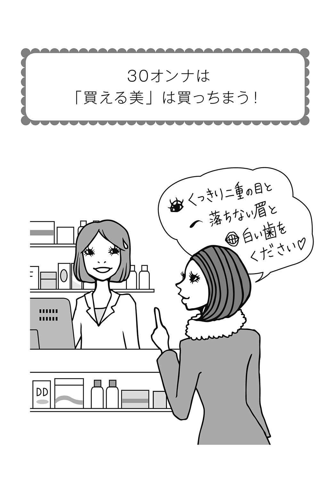
会社のお昼休み。女子トイレで歯を磨きながら、鏡ごしに、自分と周囲の20 代女子の顔を見比べて思った。
あれ...、なんか違う。
慌てて、化粧直しをする彼女たちを観察してみる。
オフィスに馴染みやすいピンクベージュ系アイシャドウ、チークもピンク系、口元もピンクベージュでツヤツヤぷるぷる。
おかしい。大枠では、自分が使っている色合いとあまり変わらない。
でも何かが違う。単に年齢の違いということではなく、アタシの顔には全体的に古っぽい感じが漂っている。動揺をおさえつつ、全身にも目をやる。
学生時代から似合うと言われてきた白シャツ。タイトスカートにトレンカ。偶然にも、隣に並ぶ20 代女子と似たような服装だ。だが、アタシには白シャツのシルエットを形作る背中に、20 代の彼女にはないビミョーな肉づきがあった。そして重力には逆らえず、若干下がったふくらはぎ。目線を上に戻せば、顔のくすみがピンクベージュのシャドウをくすませている。
残念ながら、鏡の中のアタシには、若干の〝無理〟が滲んでいた。
シャツもピンクも、数年前までは確実に似合っていたはずなのに。この日アタシは、自身のメイクや服の賞味期限が切れていることを、痛感したのだった。
これはマズい。怯えたアタシは、早速賞味期限切れを引き起こす要因を探ってみた。
その①「自分に似合っていたものに固執するあまり、流行遅れになってしまうパターン」
20 代と違って、30 代は、洋服やメイク用品の買い物に時間が掛からない。
それは、自分に似合う色とかデザインとか熟知しているからだ。
アタシの場合、体型や肌色の都合上、Ａラインは苦手で、アイシャドウは寒色、ショートボブがベスト。青味の強い色の服は似合わない。そうやって自分に似合うもの・似合わないものを知っているのは、自分をよく知っているということだから、オトナとして決して悪いことではないと思う。だが、そこに落とし穴があるのも事実。
同じボブでも、数センチ、下手したら数ミリの違いで「今っぽさ」と「古っぽさ」が変わってくるもの。けれど、30 代独身女ともなると〝自分に何が似合うかは自分が一番知っている〟という自負があるため、よほど強い意志を持たないとそのメンテナンスにまで気がまわらない。知らず知らずに過去ベースを維持して固定化してしまう。流行を追いすぎる必要もないが、メンテナンスは怠ってはいけない。
その②「鏡に映る自分ではなく、記憶の中の過去の自分に似合うものを選び続けてしまうパターン」
顔の形や色、体型、雰囲気は年齢を重ねるごとに変わっていく。だが、その現実を受け入れず、以前のままのコスメや服を選び続けてしまうのだ。昔は夕方、鏡を覗くと疲れた顔のアタシがいたが、最近は睡眠をよく取った翌日の昼ですら疲れた顔をしていることがある。単に老いなのだけれど、それがイヤで、鏡を見る回数は若い頃に比べて、確実に減っている。けれど、過去めちゃくちゃキレイに撮れた写真の自分を残像にしてメンテナンスをしても、何も意味はない。辛くとも、鏡の中の自分に厳しく向き合わなくてはならない。その上で、対応する必要がある。
例えばメイクの場合、いつまでもきっちりしたアイラインを入れているのは、目元のたるみを際立たせてしまう。また30 代半ばになると、たとえどんなに細くて長くても、全体の雰囲気として生足はきつくなる。カジュアルすぎる格好も雰囲気に似合わなくなってくる。ラメや真っ白の服も肌のくすみに映えなくなる。
やはり、現実の自分ときちんと向き合うことが必要だ。
そして、リニューアルをする際の大事な視点として、『サバイチの法則』なるものを紹介したい。つまり、サバを読むなら年齢の一割まで（ちなみにこの心得、以前どこかの本で読んだものであり、アタシのオリジナルではない）。
35 歳のアタシなら、怖れるべきはプラス３歳半に見えてしまうこと。要は38 歳半。
そして目標とするはマイナス３歳半に見えること。目指せ31 歳半。
それ以上に若作りをしようとすると、あまりにかけ離れすぎてしまい本当の年齢が透けて見えたとき、イタさが倍増する。
けれど、〝たかがサバイチ・されどサバイチ〟である。
50 歳では55 ～45 歳、60 歳では66 ～54 歳が意識すべき年齢ゾーン。年齢を重ねるにつれ、かなり差がつくことを思うと、あなどれない法則だ。
早速、31 歳半を目指し、全身リニューアルの第一歩として美容院へ行ってみた。
35 歳だというのに、アラフォー向け（プラス３歳半向け）雑誌に目を通すことになったのは、シャンプー係の男のコに手渡されたからだ。
「他の雑誌、出ちゃってて、すみません」と言ってくれたからには、ターゲット誌ではないことは伝わっていたと信じたい。仕方ないので大人しくページをめくっていたら、「年齢と上手く付き合うコーディネイト術」なる巻頭特集があった。
①〝経験を重ねた肌には、キレイだけじゃない色でしっとり感を〟
②〝体型をさり気なくカバーする、ワンピースの魔法〟
③〝ナチュラルストッキングにはない、タイツの補正力に頼れ〟
アラフォー向けの雑誌企画では、ありがちな見出し、なのだと思う。けれど、初めて目にしたその見出しに、アタシはノックアウト寸前になっていた。
せっかく編集者がオブラートに包んだ文章表現をとってくれているというのに、その裏にある真意を読み取ってしまったのだ。
①＝ 〝白だけのシンプルコーディネイトが似合うのは肌が若いうちだけ〟
②＝ 〝垂れたオシリ、ポッコリお腹に、パンツスタイルは最悪〟
③＝ 〝次第にたくましさを増す足を、ナチュラルストッキングでは隠し切れない〟
うわっ。アラフォー雑誌って、35 歳の心臓には負担が大きい記事ばかり。
でも髪型も変えたし、きっとアタシは、マイナス３歳半を維持できているはず...。そう己に言い聞かせ、翌朝、アイボリーのスーツにナチュラルストッキング姿で出社してみた。
「今日のお前、授業参観のお母さんみたいだな」
Ｋ先輩ってホント、遠慮ってことを知らないですよね。
サバイチの実践、これから本気で頑張ります。
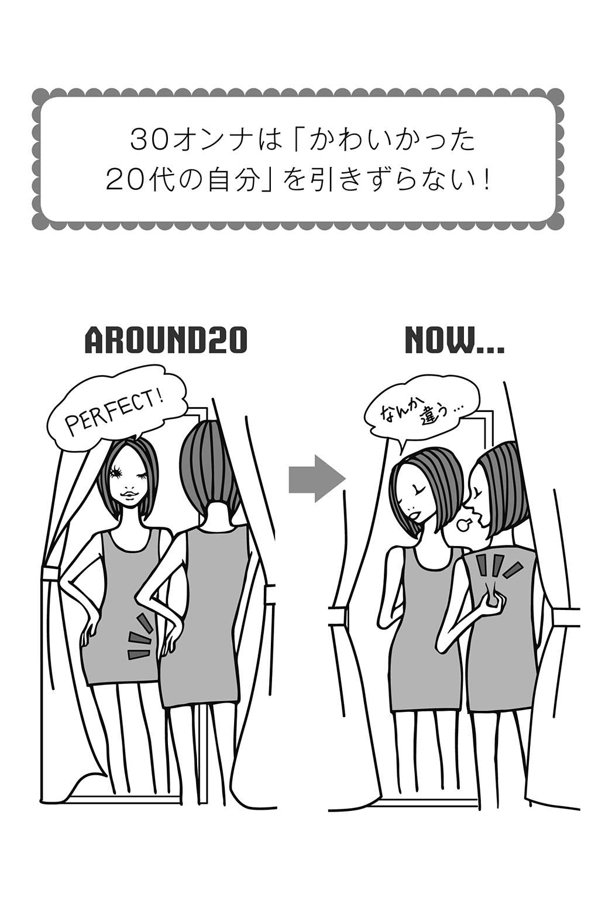
入社して以来10 年、大井町に住んでいた。
駅前のヨーカ堂は夜23 時までやっているし、駅ビルも充実していて、一人暮らしには何不自由ない、非常に住みやすい街だった。
しかし、アラサーと呼ばれ出した頃からだったか。
「どこに住んでるの？」と聞かれた際、「大井町」と答えると、「アァ...大井町ね」と、何やら上から目線で反応されることに気がついた。小心者のアタシは聞かれてもいないのに、「家賃の割に広くていいんですよ」とか、「部屋探しする時間がなくて、引っ越せないんですよ」とか、ヘラヘラとなぜか言い訳を重ねたものだった。
だが２年前、ついにアタシは住み慣れた街を離れた。
社会人も10 年目。そんなアタシが、新生活の場として選んだのは、なんとなんとなんと、オシャレな街・広尾だった。
ぶっちゃけ、会社に通いやすいワケでもなく（どちらかというと乗り換えは不便）、元々憧れを抱いていたというワケでもない。にもかかわらず、なぜ広尾に住むことになったのか。これは職業病の一種だと自己診断している。
部屋探しをはじめて、３日目。不動産会社から、「ご希望の駅ではありませんが、良い物件が出てきたので見に行ってみませんか」と、連絡があったのだ。
不動産会社によって案内されたその部屋は、築年数はそこそこあるものの、家賃の割に広さがある、雰囲気のいい部屋だった。
だからと言って、すぐに契約するのも何なので、ここはしっかり持ち帰ってから検討しようと思ったその時、同席していた大家さんが禁断の言葉を口にした。
「午後から、○○ （ライバル会社）の社員の方が見に来るんですよ」
その言葉に無反応でいられるほど、社会人10 年目はピュアじゃない。
入社以来、ライバル会社と激しい陣取り合戦を重ねてきたアタシは、即座に宣言していた。
「ここ、押さえます！」
こうしてアタシは広尾の住人となったのだった。
しかし、広尾ブランドはアタシに予想以上のものをもたらした。
正直、「どこに住んでるの？」という問いに答えた後の相手の反応が、大井町時代と如実に異なるものとなったのには、驚いた。「アァ...広尾なんだぁ！」の語感にのぞく、〝ちょっと見直した感〟とでも言おうか。
「いいところに住んでるねぇ」と９割の確率で言われる。
言葉とともに繰り出される〝お前、やるなぁ〟の視線が、ぶっちゃけ、心地よい。
アタシ自身は、大井町に住んでいた頃と何一つ変わっていないというのに、相手のその反応たるや！ おバカなアタシは、一瞬、自身の価値まで向上したかのような錯覚すら覚えてしまった。広尾、おそるべし。おそるべし、広尾。
「週末も自分らしい生活を楽しんでいる人っぽい」感を、
「部屋でアロマとか炷いて、優雅に暮らしている人っぽい」感を、
「もしかしたら実家はお金持ちで育ちがいい人なのかも」感を、
値上がりした家賃と引き換えに獲得したのだった。
これこそが、ブランド品にあまり興味を持たないタイプのアタシが、遅ればせながら経験した、いわゆるブランドデビューであり、ブランド効果の実感であった。
『ブランド』。
20 代の頃は、ブランドの力を借りることに対してアンチだった。
財布を出せば、みなヴィトンで、とりあえずエルメス持ってればセレブでしょ、みたいなのは浅はかだと感じていたから。
だけど30 を過ぎて思った。ブランドって頼りになる。だって、身の回りのことに気を遣わなすぎても、〝イケてない女〟と後ろ指をさされ、かと言って、行き届きすぎても〝イタい〟とされるのが30 代独身女だ。見た目に関して言えば、最低限がクリアできていれば、致命的な〝イケてない女〟を回避できる。
どちらかというと、自分を装ううえで大事なのは、やりすぎないようにすること。
その際、重きを置くべきは〝敵じゃない〟感をいかに出すかだと思う。
この年になると、個性なんて正直、後回しでいい。
悲しいかな、30 代独身オンナというだけで充分「個性的」なのだ。
「結婚という社会生活のベースを満たしてはいないが、世間様に迷惑をかけるような存在ではありません」という雰囲気をかもし出し、相手に安心していただくことのほうが重要。そんな時にブランドが必要になる。
持っているブランド品から、初対面の相手のパーソナリティーは推察できる。
たとえば、シャネル好きとグッチ好きとを比べると、グッチ好きのほうに都会志向の強さを感じてしまうし、はたまたロンシャンを愛用している人には、物持ちのよい上品で育ちがいい女性のイメージを持ちがちだ。すなわちブランドとは、無言のうちに、幾つかの事項を相手に伝えてくれる存在なのだ。
それぞれのブランドによって伝えるメッセージに差異はあるけれど、どのブランドにも共通するのは、〝ちゃんとしてる感〟だと思う。
〝ちゃんとしてる感〟は、先述の〝敵じゃない感〟にもつながる。
これは、若さで乗り切れる20 代と違い、30 歳を越したらマストで欲しい存在。
素の自分に伴っているとは残念ながら思えないからこそ、お金で買えるのなら安いものではなかろうか。
ある一定の信頼感を、〝ブランド料〟という名のお金で買うのだ。
資本主義社会の申し子である世代としては、当然の選択だろう。
ご同輩の皆様には、ブランドの活用を、ぜひぜひお薦めしたい。
かくいうアタシの広尾ライフがいかなるものか。
外人が多数行き交う街。
英語で道を聞かれるたびに、心臓がバクバクする。
オシャレ部屋着を着た隣人ばかりが住まうマンション。
ジャージではさすがにゴミを捨てに行きづらい。
家賃の値上がりに伴い、生活も若干苦しめ。
それでもアタシは、広尾に住むことをやめようとは思わない。
だって、多少の無理はあっても、広尾に住むことで得られるステータスと、他者からの評価で湧きでるアドレナリンは、30 オンナのアタシに自信を与えてくれるから。
この街に住む35 歳のアタシ。
...悪くないと思う。
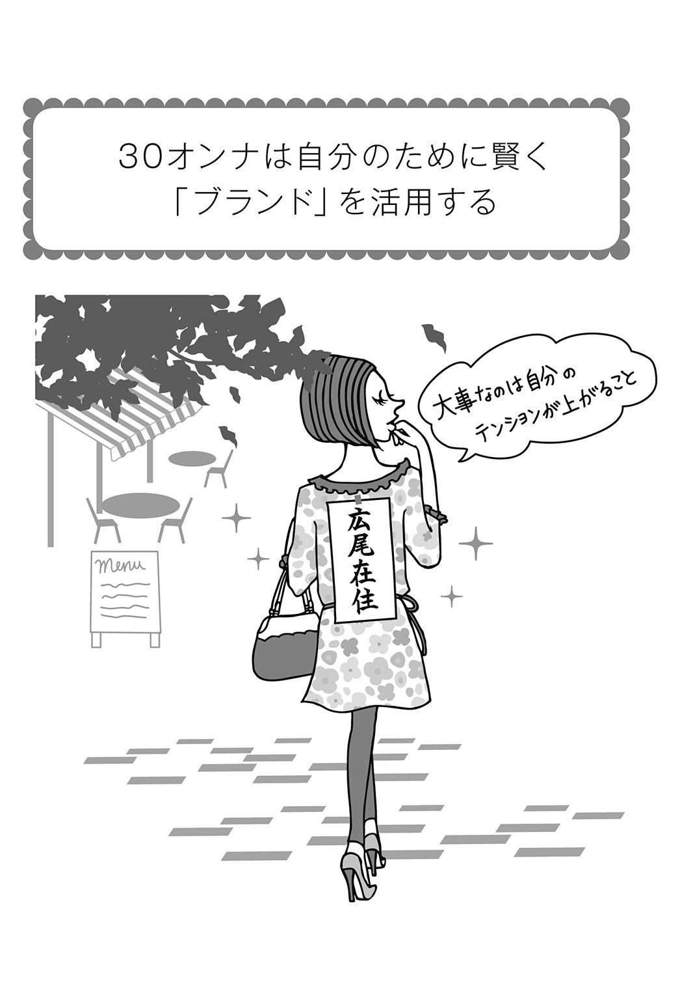
20 代ラストイヤーを謳歌する編集者トミーに聞かれた。
「もしＭＡＤさんが20 代に戻れるとしたら何をしておきたいですか？」
うーん、そうだなぁ。日焼け止めをもっと必死に塗る、かな。
シミって忘れた頃に湧き出て来るから。
トミーはふむふむ言いながら、アタシの目元に潜む茶色い点を見やった。
それに体重も気になる。10 代の頃は、ちょっと運動すれば３キロくらいすぐに落ちた。でも30 代半ばになると、１キロすら自力で減らすことが難しくなる。
トミーが力強くうなずく。すでに自覚があるらしい。
しかし、実はこの２つ以上に、後悔して止まないことがある。
それは見た目というより、全体の印象というか、生活習慣に近いもの。
● 都内の道路の勉強
● バッグの中をキレイに保つ練習
● 仕事でのスキルアップ
この３つ、何故身につける努力を怠ったのか、その重要性に気付けなかったか、若かりし頃の自分の思慮のなさが、心から悔やまれてならない。
先述のとおり、30 代独身女は〝ひとりよがり感〟を醸し出さないように気をつけなければならない。その時大事なのは〝隙〟だ。
だけど、〝隙がある〟のと、〝オトナとしてちゃんとしてない〟はまったくの別物。
〝モテ〟の重要な要素として、永遠の少年性とか少女性とかよく言うけれど、これはあくまでベースがオトナである人がたまに見せる〝隙〟のことだから。
全体はオトナなのに、ほんの数％、少年少女が混じっていると魅力的。
世界のキタノと呼ばれるほどのビートたけし氏がたまに見せるはにかんだ笑顔とか。
『金麦』のＣＭで檀れいさんが見せるあどけない仕種とか。
めちゃくちゃ魅力的ですよね？
だけどそれにはベースがオトナであることが大前提。
編集者トミーの上司である吉川デスクが教えてくれたが、『大人になったら、着たい服』（主婦と生活社）というファッション誌が売れているらしい。
ここでいう「オトナ」は、なんと40 歳の設定なんだとか。
20 歳で成人して、そこからさらに20 年が経ってようやくオトナになるのが、今の日本らしい。が、見た目は別として、自分の内面の幼稚さを考えると、思い当たるところがありまくる。35 歳のアタシだが、胸を張って「オトナ」と言えるかというとかなり怪しいもの。
でも。20 代女子の幼さは、作為的なカマトトブリっコとも言えるし、まだギリギリ許されるかもしれないが、30 代独身女が幼いのは...、いい年してコドモなのは...、イタい注意報を発令せざるを得ない。
何故なら、それはただの無知でしかないから。もしくは学習能力が極端に低いか、のどちらか。
いかに内面において〝オトナ〟になっておくか。
もう一度20 代をやり直せるのなら、アタシは何よりこれに取り組んでおく。
それでさっきの３つに思い至ったのだ。
● 都内の道路に詳しいこと。
若い女のコが、地下鉄の乗り換えやタクシーでの道案内が苦手でもかわいいが、ある一定年齢を超えてるのに、「道、分かりません」「地図、読めません」は、かなりきついものがある。
かくいうアタシは、どうにもこうにも道を覚えられない性質で、初めての場所に行く時や、偉い人や取引先を連れてどこかに移動すると、大概失敗する。
そのいたたまれなさったらない。我ながらかなりのイタさである。
● バッグの中をキレイに保つこと。
これは習慣だから、使ったら元の位置に戻せばいいんだけど、朝にはキレイに物を納めたはずのバッグが、何でだか夕方にはぐっちゃぐちゃになってしまう。探し物はなかなか見つからないし、外でバッグを開けた時かなり美しくない。しかも男の人って、結構チェックしてるんですよ、そういうところ。
会社のデスクのゴミ箱が溢れかえって汚いのもそうだけど、だらしなさは危険。清潔感のミニマムポイントとして、せめてバッグだけは頑張りたい。
● 仕事のスキルアップ。
若いときは、女性ということをうまく使うと、ぶっちゃけ甘えが利く場面もある。だが、実力をあげておかないと、30 歳を越えて若さという付加価値がなくなったときうろたえることになる。正面切ってそのための〝勉強〟が許されるのは20 代までだろう。実際、社内でＭ氏と打ち合わせをしていて、適当な相槌くらいの気持ちで、「勉強になります」と言ったら、「キミの年次で、もう勉強とか言ってる場合じゃないでしょう」と諭された。びっくりしたけど、間違った指摘だとは思わなかった。
30 代ともなるとある一定レベル以上の仕事ができて当たり前とされる。自分のレベルが下がったワケではないのに、20 代と同じことを続けていると、当時は誉められたことでも、周囲の期待値を下回る。
多少テクニックに走りすぎている感はあるが、これら３つさえできていれば、35 歳になった今、〝オトナとしてちゃんとしてる様子〟をもう少し醸すことができていたのではないか。我が身のイタさを想うたび、アタシは20 代の己の腑甲斐なさを責めずにはいられない。今からでも頑張らなくちゃ。
黙って聞いていたトミーが頷きつつ、意外と大変なことじゃないのでは？って顔をした。
そうなのよ。実際、難しいことは何もなくて、見た目としてのサバイチはキープしつつ、内面は年相応であれ、ってことだけなの。
背伸びする必要はまったくない。
けどこれが身につかないまま、アタシは35 歳になっちゃったワケで。
「さらに35 歳にして、イタい女性代表ってことを、こうして本に書いちゃっているんですもんねぇ...」
何てことを言うの！ 書くように薦めたの、トミーじゃない。
この本の執筆を受けたの間違いだったかしら...。
オトナとしての正しい判断ができないと、こうしてアタシのように、身を滅ぼします。
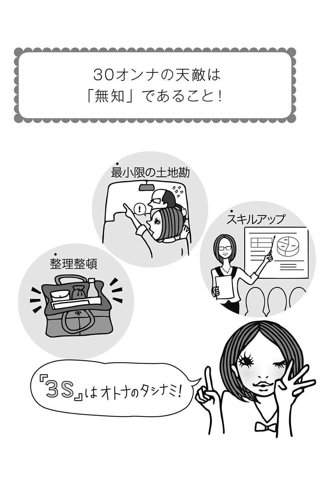
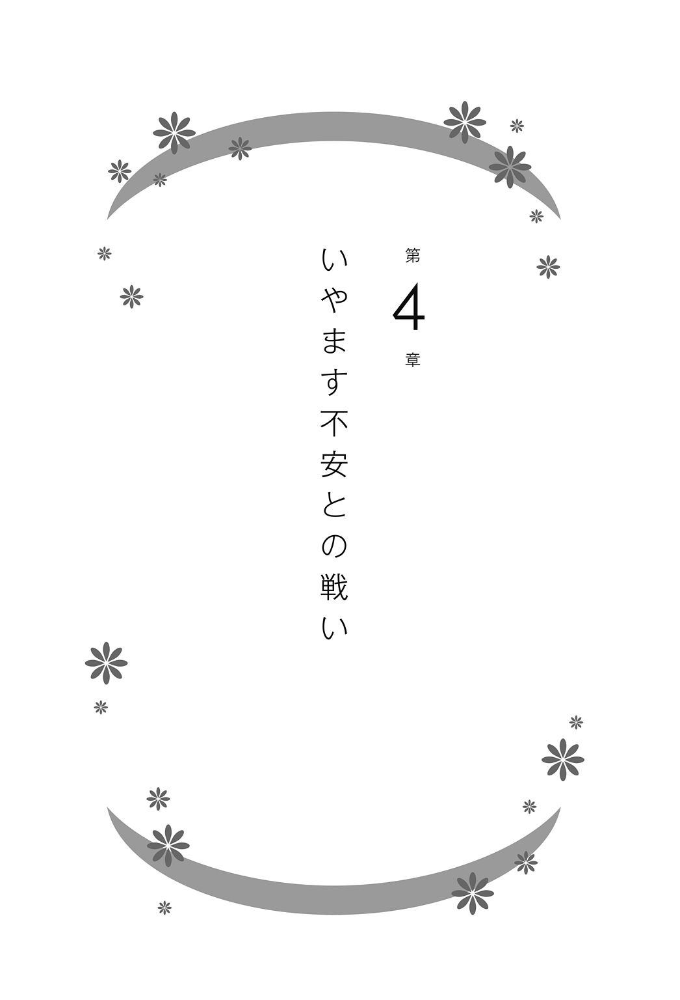
今はこんなに不安だけど、年齢を重ねるにつれて自信がついていくのではないか、と思っている20 代読者の皆様。
残念ながらそれは勘違いです。
年齢があがるほど、不安は増します。書き出しからして、怯えさせてごめんなさい。
でも、これだけは声を大にして言いたい。
不安も増すけれど、いたずらに35 年も生きてきてない分、年齢を重ねたことで失敗を未然に防げたり、人間関係が円滑になったり、恋愛でうまくいったりすることも、あります！ そういう事象を、アタシは〝過去の自分に助けられる〟と呼んでいる。
たとえば、こうして本を書かせてもらっていることもそう。
『踊る大捜査線』シリーズで有名な本広克行監督と、たまたまお仕事をさせていただいた。本広監督は大御所にもかかわらず気さくな人柄の方で、小劇場演劇が大好き。アタシも中学高校大学と演劇をやっていた縁から、仲良くさせていただいた。
それで、『踊る大捜査線 THE MOVIE ３ ヤツらを解放せよ！』の制作を追った書籍『踊る監督日記』（講談社刊）の編集者だったトミーと知り合いになったのだ。ある時、本広監督も一緒にガールズトークに華を咲かせるうち、29 歳・トミーから「本、書きません？」と提案をもらった。
中学高校大学と演劇をやってなかったら、こんなご縁にはなっていなかっただろうから、夢中になって演劇をやっていた過去の自分に助けられた一例だ。
さらに、入社６年目の頃、同期４人で面白いことをやろうと、仕事で頑張ったことがあった。動機は極めて不純な、〝楽しいことを同期とやりたい〟ってだけだったのに、結果として海外の賞なんぞをいただけた。
そうすると、有り難いことにアタシと仕事をしたことがないにもかかわらず、「ＭＡＤという人は優秀なんだな」と、会う前から良い印象を持ってくれたりする方もいる。そういうのを知ると、「６年目の自分、有難う！」と心から思う。
アタシは、過去の自分に、特に、がむしゃらだった20 代の自分に助けられてばかりの30 代を送っている。
という話を、同期二人呑みで語ったところＢ子に言われた。
「過去の自分に、偶然、助けられるってのは分かる。私もそういうことあるし」
だよねぇ。
「でも、不安に対抗するには、その偶然を期待してばかりではダメだと思うな」
さすがは出世頭。言うことが違う。
「じゃ何をすればいいかっていうと...20 代女子に強く勧めたいのは、仕事でもプライベートでもどんなに些細なことでもいいから、〝成功体験を持つこと！〟だよね」
そのまま酔いつぶれたＢ子に代わって説明すると、前述したように、年齢を重ねるにつれて、不安量が増すのは確か。
老後の貯金をどうしようとか、家族もなく一人で死んでいくのかなとか、定年まで会社はあるかしら、リストラされないかしらとか、そういう現実がどんどん切実になる。
過去には気にも留めなかった健康診断の血液中のいろんな値も、日本年金機構から送られてくる「ねんきん定期便」も、気になってたまらなくなる。
こればっかりは若い頃の比じゃない。
だからこそ一番自分を助けてくれる過去というのは、〝成功した〟過去だとＢ子は主張しているのだ。これはアタシも同意するところ。
オンナが一人で生きていればいろんな事態に直面する。
そんな時、成功体験は背中を押してくれる。
「前に上手くいったし、今回も何とかなるかも！」
なんて、不安だらけの30 代独身女に根拠のない自信を与えてくれるのです。
「言ってることは分かるけど。成功体験なんて言われても...私にはとても無理」
そう思った方もいるでしょう。
でも〝成功〟という響きに萎縮する必要はまったくありません。
ノーベル賞を取ったり、会社を立ち上げたら利益がすごかったり...みたいなことだけを成功体験と呼ぶワケではないですから。些細なことで充分なのです。
大きなトラブルに直面したけど、目の前のことを粛々と片付けてみたら、中トラブル位で終わらせられた、とか。
大失恋してご飯も食べられず仕事も手につかずだったけど、次に好きな人ができたら復活できた、とか。
新しいことを立ち上げて結果を出すのは苦手だけど、情報を整理しながら確実に進行するのは得意、とか。
些細な一言で友達とケンカしそうになったけど、ギリギリのところで話題を変えて回避させることができた、とか。
１００の成功体験を目指す必要なんてない。
だけど、０と１、あるのとないのとでは、全然違う、みたいなこと。
30 オンナになるのがモンスターにでもなるかのように怖いという20 代女子のみなさん。くどいようですが、20 代と違って30 代は不安が増えます。
どうか自分の武器となる成功体験を、今のうちに蓄えちゃってください。
そうすればきっと必要以上に怯えなくて済むようになります。
「何してんの？」
翌朝、自分の成功体験が一体幾つあるのだろうと書き出していたら、Ｋ先輩に見つかってしまった。
いやぁ不安対策に手帳にでもはさんでおこうかと思って、とは言えず、ヘラヘラっと笑って誤魔化す。ちなみに、結構長い付き合いになってきましたが、Ｋ先輩から見て、アタシの成功体験ってなんですかね？ さり気なく聞いてみた。
「...悪い、思いつかない」
へえー。
Ｋ先輩の毒舌にはもう免疫ができている。こういうことを言われても落ち込まずにいられるのは、言われ慣れた過去の自分のお陰です。
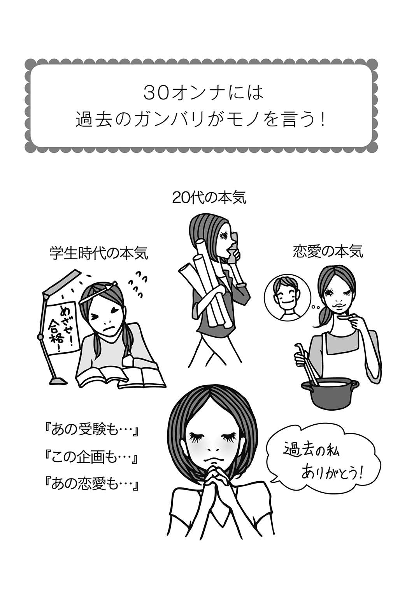
「コンカツは本能」でイタくならないためには〝コッソリと〟と、書いたし、イタいとは別次元で、悩める30 オンナの師・蝶々様も、恋と結婚の確度をあげるためにはやはり〝密漁〟だと、書いておられる。
両方に共通しているのは、〝単独行動〟だ。
これは恋愛に限らず、30 代独身女の自立において重要なポイントだと思う。
オトナとしてちゃんとしてるためには、まず、単独行動ができなくてはならない。
しかし、幼稚園・小学校・中学校・高校と、アタシたちは、集団登校・部活動・文化祭など、いかに集団で活動するかについては、徹底的に叩き込まれてきた。だけど、一人で行動するということについては、実は教えられてきていない。
にもかかわらず、急に単独行動をしろと言われても、それは準備運動もせずにプールに飛び込むようなもの。完全に正当化だが、できなくて当然だと思うのです。二人三脚やら、〝三本の矢〟の尊さを教えるだけでなく、〝おひとりさま力向上〟の授業もあればよかったのになぁ。
とはいえ、今さらそんなことを言っても仕方ないから、アタシは35 歳にして、独学で勉強中だ。「一人ランチ」は、入門以下の基本だろう。
注文してからお皿が来るまで、が手持ち無沙汰だが、最近はケータイをいじっていればあっという間に時間が過ぎる。延長線上の、一人ラーメン、一人牛丼、一人映画館も、自分をダマシダマシ、何とか行けるようになってきた。
続いて、まぁまぁ親しい人の結婚式の二次会。
これはハードルが高い。花婿もしくは花嫁とは知り合いだが、他に共通の知人がいるわけではない、みたいな関係。お祝いはしたいから出席するのだけど、受付を済ませて会場に入ると、会場は知らない人たちばかりで、ドリンク片手にポツネンとするしかない。この居心地の悪さが、アタシは本当に苦手だ。積極的に知らない人に話しかけるほどのタフさはないし、誰かに声を掛けられるような美人でもないし。これはいまだに克服できずにいる。
最後に何も予定がない週末。
これを一人でどう過ごすかで、真のおひとりさま力が試される。
女性の一人暮らし。部屋の掃除やら洗濯なんて、あっという間に終わってしまう。
20 代の頃は、予定がぎっしり詰まってた。昔からの知り合いに会ったり、最近仲良くなった人と出かけたり。行きたいことろも沢山あったしお誘いも途切れなかった。アタシもめちゃくちゃ楽しんだ。
だが30 歳を過ぎると、友人知人が結婚をして家庭を持ち、さらには子供が産まれはじめるので、遊び仲間が減ってくる。新しく出会う人たちも、同年代は既婚者ばかり。たまに独身に出会ったとしても全員と気が合うワケでもない。
お誘いも、特に異性がらみはなだらかに減っていく。
そして、週末、時間を持て余すようになる。
冗談ではないんです。笑いごとじゃないんです。
だから20 代のみなさんには、30 代になった時に慌てないよう、おひとりさまの準備をしておくこともお薦めしたい。
ちなみに〝ひとりよがり〟なのと〝おひとりさま力〟は全く違います。
前者は他者の介在を拒んでいるところがあるけれど、後者は他者があっての一人をきちんと分かっているのです。
週末のおひとりさま力を身につける上で欠かせないのが、一人遊びだ。
要は「趣味」。現状ムシュミなアタシは、まずは趣味探しから取り組むことにした。
どうせ何かしら趣味を持つのならば、色んなことに好奇心を持ち、自分の人生を豊かにするようなものがいい。オトナの趣味というとゴルフのイメージがあるが、実際、ゴルフという趣味はよくできている。４人なりで予定を合わせてゴルフ場に行けば、それは、週末に複数人で過ごす社交の場になる。だが一人で打ちっぱなしという過ごし方もできる。ゴルフさえ覚えておけば、複数でも一人でも週末を楽しむことができる。早起きをして身体を動かすから、健康的。だからオトナはみな、ゴルフをするんだなぁ。子供の頃からの疑問が解けた瞬間である。とはいえ、初ラウンドで３４９を叩いたアタシには、ゴルフ道を突きつめる勇気はない。いや才能がない。
こんなアタシに最適な趣味は何なのか。
アタシは真剣に考えた末に、以下の４点を必要与件にしてみた。
● 一人でもできる
● 複数でもできる
● お金があまり掛からない
● できれば手に職みたいのがつくと嬉しい
勿論、興味が持てることが大前提だが、これらの与件が解決される趣味であれば、とりあえず、一人の怖さをしのげそうじゃありません？
あ、いいの一つ、思いついたかも!!
「ＭＡＤちゃん、仕事がシュミとかやめてね」
...Ｈ女史、アタシのこと、ホントによくご存知で。
もうちょっと考えてみます。
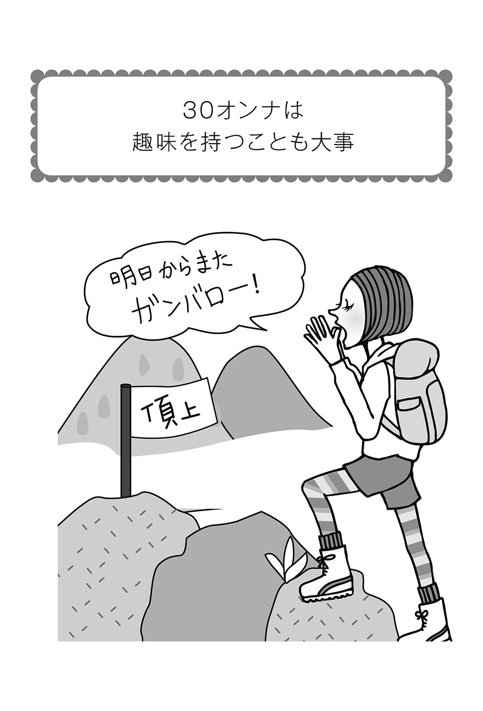
仕事が上手くいかなかった。
言わなくていい一言を口にしたせいで、人を傷つけてしまった。
元カレが今カノといるところにバッタリ出くわしてしまった。
会議でアタシの意見だけみんなに否定されて、全く役に立てなかった。
こんな時、アタシは情けないくらい分かりやすく落ち込んでしまう。
もしそれが平日ならば、できるだけ早く家に帰りたくなる。
そして、いつもは絶対買わないようなお高い入浴剤。甘いラブストーリー満載のコミック誌。もしくは薄めのハーレクイン小説。普段ならもったいなくて使えない、チョー高級顔パックシート美容液。これらを値段のことなど考えずにバーンと購入する。
それから、たっぷりのお湯をはったお風呂に入る。香り豊かなお湯につかりながら、顔にパックをはり、雑誌や本を読む。読みながら、感情に任せて、泣きたくなったら思いっきりビービー泣く。読んでいる内容はどうでもよくて、きっかけでしかない。
汗まみれの顔に、涙がつたうままにする。声を出してもいい。鼻水が垂れてもいい。とにかく「ちゃんと」泣く。いつしか涙は止まる。
泣くだけ泣いてスッキリしたら、最後に、丁寧にスクラブしながら身体を洗い、シャンプーにコンディショナーにトリートメントをして、お風呂を出る。
これが、アタシの「復活の儀」だ。
「復活の儀」って一体ナニ？ そう思った方に説明させていただきマス。
色んな人との関わりの中で生きていれば、落ち込むこともある。自分のミスや自分の力不足を痛感して落ちることもあれば、他人のミスや感情に振り回されイライラしてしまった自分に落ちることもある。意味もなく他人と自分を比べて、嫉妬したりもする。そんな時、これをやれば元気になるという、自分オリジナルの回復法。
昔は、友達に泣きながら電話したり、強引に会う時間を作って話を聞いてもらったりしたものだけど、主にそれを担当してくれていたＴ代も二児の母となり、前のようなペースでは付き合わせられなくなった。そんな時、自力で回復できる、そう、『ドラクエ』のホイミみたいなものがあるにこしたことはない。他人がいなくても使える自分回復の魔法。アタシはこれで随分救われてきた。
お風呂で泣いただけでホントに元気になるの？ と思う人もいるかもしれない。
でも、驚くことに、なるんです！ 実際のところ、効果があるとかないとかではなく、儀式の場を持つことに意味があるのかもしれない。20 代と違って、30 代にもなると自分の感情をある程度コントロールできてしまうようになる。
入社した頃は、「会社や人前では泣かないようにしよう」なんて意識をしていたものが、30 代になるとむしろ泣いたほうがいい場面ですら、残念ながら涙が出なくなってくる。やせ我慢も覚えてしまうからなのか、プライドなのか。
だけど、辛いことが減っているワケではないから、内心煮詰まってしまうことは多々あるワケで...。我慢しっぱなしだと苦しくもなる。
だからこそ、たまには人目をはばからず感情を露わにするという行為が大事になる。
そういう意味で30 代独身女には、「復活の儀」が必要なのだ。
もちろん、吐き出しただけでは本質的な問題は何も解決していない。
だけど、30 年も生きてくれば、悩みや迷い、心の暗部がゼロかヒャクかで解決するものじゃないことも、よく分かっている。
人との関わりを続ける限り、落ち込みと縁は切れないし、一生付き合い続けなくてはいけない相手なんです。それがドス黒くたまってきたら、上手く吐き出させて、薄いグレーくらいにできれば充分！ 次に前を向くきっかけになればそれでいい。
ある意味、自己暗示なのかもしれない。〝儀式化〟することによって、「このまま煮詰まっていても何も解決しない、それは分かっているがついヘコんでしまう自分」に、「モードチェンジ」するきっかけを、自分で与えることができるのだ。
それにしても慣れというのは恐ろしい。
パブロフの犬と同じで、アタシなんか最近は、入浴剤を購入するところくらいから、「泣くだけ泣いたら元気になるぞ」と、どこか頭が切り替わりはじめる。だから20 代後半から、各自のオリジナルの「儀」を見つけておくことをお薦めします。数年慣らしておけば、30 歳になった頃には、「復活の儀」のプロになってるはず。
最後にアタシの「復活の儀」失敗事例をご紹介しよう。
先のお風呂の儀式にたどり着く前、よくやっていたこと。ホールケーキを丸ごと１個買ってきて、切り分けもせず大きなフォークでガツガツ食べるのだ。
だが、行為として美しくないからか、食べ尽くしてもむなしさがこみ上げるし、食べつくした後の体重が気になって自己嫌悪...。更に落ち込む自分...。
情けないかな、あるケーキを見ると、最悪に落ち込んだ思い出が脳裏によぎりまくってもう食べられなくなってしまった。単純おバカなパブロフ犬なアタシ。
以上の経験を踏まえ、皆様には、美しい系の「復活の儀」をオススメいたします。
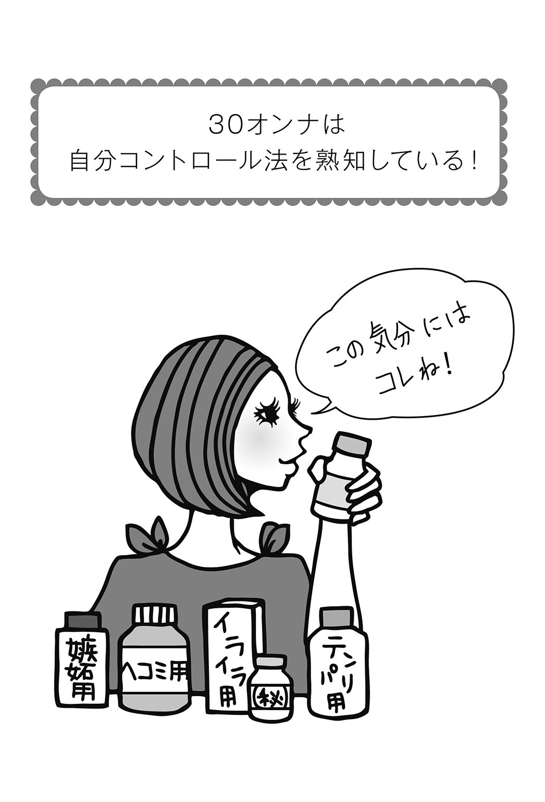
中高生の頃は、お小遣いにも限りがあり、お財布の中はいつもひもじかった。
モノを買うのも食べるのも、基本、百円単位。友達の誕生日プレゼントで千円のものを買うとき、ドキドキした。親の名誉のために言っておくが、決して貧しい家庭に育ったワケではない。教育にはお金を掛けてもらったから、中高一貫私立校にも通わせてもらったし、美味しいご飯をたまに食べに行ったり、可愛い洋服を買ってもらったり、というのはあった。
これはあくまで自分の自由に使えるお金の話だ。
大学生になりバイトをするようになったら、千円単位で暮らすようになった。
飲み会とか、買いたいものとか、演劇にも夢中になったから、チケット代ですぐに千円札がなくなった。そんな自分が贅沢を覚えたようで、ちょっと気恥ずかしかった。
そして35 歳になった今、１万円を、〝平気で〟とは言わないが、〝清水の舞台から飛び降りるような思いで〟とまではいかずに、使えるようになっている自分がいる。
そもそも結婚もしてなくて子供もいない30 代独身女は、自分にしかお金を使う必要がない。もとい、自分にしかお金の掛けどころがない。だから、大きな贅沢はできないが、それなりであれば費用は捻出できるのだ。マッサージで６千円払うなんて、前ではありえなかったのに。ペデュキアで１万円とか払えるワケで。ヨーグルトとかパンをコンビニで買うにも、値段じゃなくて味で選べてしまう。
冷静に考えると、これは非常に贅沢なことだ。
だが、ふと我にかえり不安になってしまった。
アタシったら、いつの間に、こんなプチセレブのような傲慢な金銭感覚を身につけたのだろう。そして、こんな贅沢を覚えてしまって大丈夫なのだろうか。
だって考えて欲しい。
会社の将来だって、年金制度だって、明るい未来や保障はどこにもないのだ。
自分の老後に不安しかないというのに、お金がないと生きていけない人間に成り下がってしまったら、人間としての〝生きていく力〟がどんどん退化してしまうのではなかろうか。
新築の家じゃないと住めない、とか、高いストッキングじゃないと履き心地が、とか、美味しいパン屋さんの焼きたてのパンじゃないとダメ、とか。
戦後をたくましく生き抜いた日本人の子孫にしてはあまりに軟弱というか、生命力に欠ける気がする。なんていうか、若干、お金に依存してる匂いがするのだ。
そういうのって美しくない。
別に、「贅沢は敵だ。極貧生活をして貯蓄に精を出すべし」とは思っていない。
経済の仕組みを知っている働き女子なので、消費を悪だとも思っていない。
30 オンナのストレス解消法として、買い物や自分へのご褒美などの散財というのも間違いなくありますから。
だけど、いざお金がなくなったとき、うろたえてしまう自分にはなりたくない。
安くて硬い再生紙のトイレットペーパーでお尻を拭くたびに、「昔は柔らかくて真っ白なトイレットペーパーを使えたのに...」とか、一人落ちぶれ鬱にもなりたくないと思うのだ。
要はお金がないと生きていけないオンナって、率直に〝イタい〟気がするのです。
アタシは、多少余裕がある30 代独身女のお金のかけどころについて考えてみた。
その結論が、「自分自身への投資」だ。
それもできれば、「生命力向上のための」投資。
〝何か足りない感〟〝ちょっと満たされない感〟が、人を成長させる。
模索が続き、何もしなくても生命力が向上していた20 代と違って、ある程度満たされてきた30 代は、成長にあたり、意識的な〝投資〟が必要なのだ。
その① 対「老化」への投資。
これは、病院やエステ、ジム通いなど、肉体のメンテナンスを指す。
エステやジムに〝キレイになるために〟行くのではない。〝老いないために〟行くのだ。年を重ねるにつれて肉体は確実に衰える。風邪をひいても一人で治さねばならないのが30 代独身女であるが、家で一人臥せっていると気分が滅入ることこの上ない。健康な肉体を持っておくことが、必要不可欠である。
老化から逃れることはできないが、ケアをしておくのとしないのとでは、長い時間を経たとき雲泥の差になる。
その② 「武器ゲット」のための投資。
これは、英会話に通ったり、資格を取ったり、趣味の幅を広げて博識を身につけたり、第三者から見たときに分かりやすい、付加価値をつけるための投資を指す。
何も持たず何も知識がない状態で産まれてきた赤ちゃんは、生きているだけで毎日知らないことを覚え、成長していく。だが30 歳にもなると、そこそこ多くを吸収してきている分、もう余白がなくなってきていて、次第に目に見えた成長というものがなくなってくる。だからこそ、意識的に自身が成長する機会に投資しておくのだ。それがやがて「武器」になる。
この二方向のいいところは、いざという時が来たりして資金が尽きたとしても、掛けてきたお金が、自分自身に投資されているから、お金を掛けなかった時と比べて、結果として生命力が向上しているところだ。落ちぶれ鬱どころか、落ちぶれた時の戦力になる。健康な身体と、第三者から見ても充実した実力があれば、大概のことが起きても何とかなるだろう。職を失っても、次の仕事を見つけやすい。
ふっふっふ。我ながらいい投資を思いついたと自負していたら、
「投資もいいが、そのための資金はあるのか？」
いつものごとく、Ｋ先輩から鋭い指摘が飛んできた。
「バカにしないでください。こう見えて、財形とかもやってるんですから」
誇らしげに答えたが、Ｋ先輩は呆れただけだった。
「うちの会社の財形は、簡単に下ろせないの分かってるか？ 30 歳過ぎたら、財形や保険など最低限の金融知識はオトナとして常識だから」
......投資への道のりは、まだまだ遠そうだ。
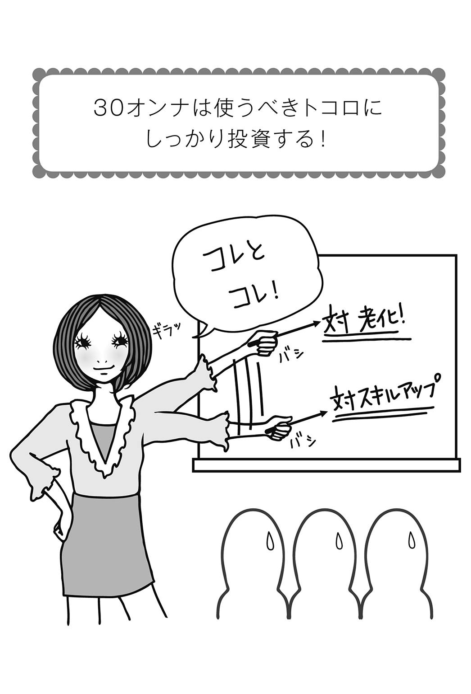
彼氏や彼女が途切れない人っている。
その様子を、「うんていの法則」と名づけたこともあった。
一つめの棒から次の棒に移る時、一瞬またがっていたりしてるから「うんてい」。
毎回ドスンとみっともなく落下して、もう一度準備体操からはじめなおさないと次の棒に目を向けることすらできない自分と比較して、彼らには恋愛の才能があるのだと思っていた。だがその才能にプラスして、彼らに大きな共通項を見つけました！
それは、「淋しがり屋」だということ。
一人でいるのが苦手だから、人恋しくなって、誰かと行動をともにして、誰かといい感じになっていく。もしくは、彼氏への愛情が薄れても、次に好きな人ができるまでは「淋しいから」別れない。結果、彼氏が途切れない。
それに引き換えアタシなんて、入社前にＯＢ訪問でお世話になった先輩から、
「うちの会社で10 年も働いてると、金銭的にも精神的にも一人で生きていけるようになるわよ」
と言われたのだが、まさにそれを実感しているくらい淋しがり屋とは対極にいる。
学生時代の恋愛傾向からも変わることなく10 年。会社で揉まれて10 年。
気づけばだいぶ強くなってしまったものです。
しかし、このままではよろしくない。
この後の人生、家族がいない独身ともなると、多くの人との触れ合い支え合いが大事になってくる。危機を感じたアタシは今から〝恋愛傾向〟を見直し、まずは何としても淋しがり屋になろうと研究をはじめたのだった。
一見、前項の「おひとりさま力」と矛盾しているように感じるかもしれないが、「一人でもいられる」ってことと、「みんなともいたい」ってこと、これらは対抗軸ではないのです。Ｘ軸とＹ軸のようなもの。
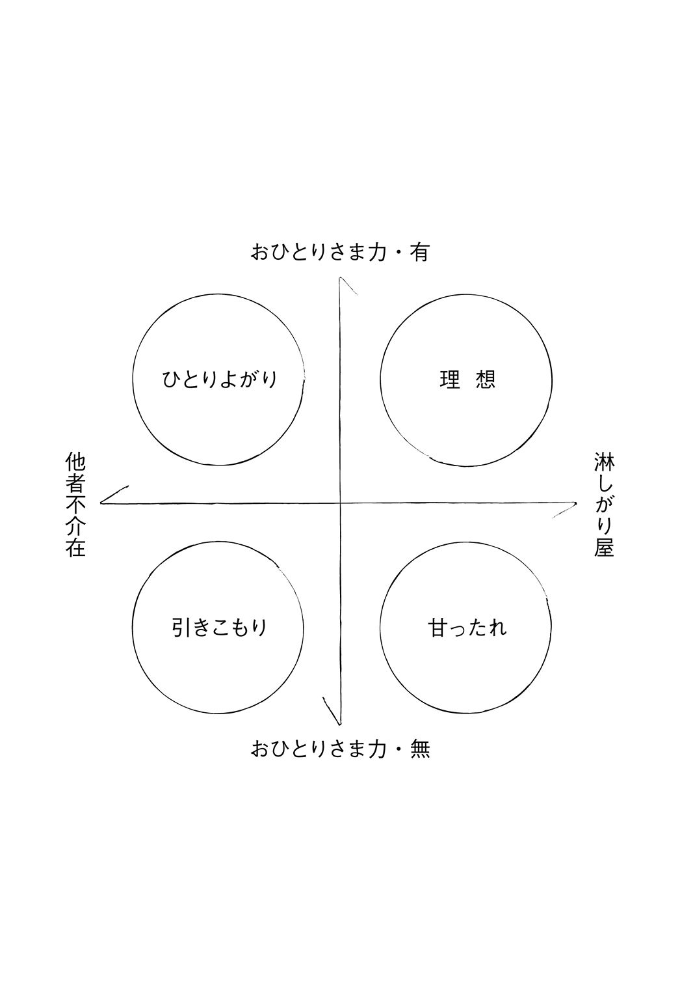
〝一人でも〟生きていけるオンナにはなりたいが、
〝一人だけで〟生きていけるオンナにはなっちゃいけないのだ。
その時、この〝淋しがり屋〟というワードがキーになる。
アタシの周囲で一番の淋しがり屋といえば、Ｕ課長だ。
一人でお昼に行くのも苦手で、「今日何食べる？」と毎日部下に聞いてまわる。でも淋しがり屋なだけあって、若い頃は、彼女が途切れなかったらしい。
アタシは殊勝げに頭を下げると、淋しがり屋の秘訣を請うたのだった。
Ｕ課長は、すかさずアタシを昼食に誘うと答えてくれた。
「確かに俺は淋しがり屋だが、誰でもいいから一緒にいたいワケじゃない」
...と申しますと？
「この年齢になるとあと何回友達とご飯を食べられるかな、とか考えるんだよ。そうすると、つまらない面倒なヤツではなく、できれば明るく楽しいヤツと食べたいなぁって思うわけだ」
ほほう...。
「求めるものが、10 代の頃の友達とは違ってくるんだ。俺がそう思うということは、俺だけじゃなくてきっと相手も同じように考えているだろう」
おそらく。
「となるとな、ＭＡＤがまだ20 代だったら、とりあえず淋しがり屋を目指すのもいい。だけど30 代になってからは周囲から友達でいたいと思われるような人間になることが大事なんじゃないか。つまり、最低限明るく楽しいヤツであること。お前たまに暗いからな。まずはそこから改善しろ」
最後が急に説教っぽかったが、アタシはなるほど！ と思ったのだった。
そういえば、隣の課のＭ氏が、ＯＢ訪問で学生から〝どんな新入社員と仕事がしたいか〟と聞かれた際の言葉を思い出した。
「そりゃ、同じ能力を持っているなら、暗い新入社員よりも、明るい新入社員と仕事をしたいですよ」
学生は若干キョトンとしていたが、アタシは心底同意したものだった。
それは30 オンナでも同じこと。淋しがり屋になる選択肢すら20 代で終わったとされる30 代ならば、どうせ30 代独身女ならば、暗い30 オンナよりも明るい30 オンナのほうがいいに決まっている。
よし、こうなったら迷うことなく、明るく元気な30 オンナを目指すぞ！ おぉ!!
と、ここで終われないのが、努力好き元・優等生の悲しいサガ。
受験勉強でも〝オリジナルの知恵〟が問われ始めた世代だけに、工夫を加えてみたくなるのだ。そして思いついてしまう。答えは単純で〝明るく元気な＋淋しがり屋〟になれば、さらに完璧なのではなかろうか。
我ながら良いアイデアに気をよくして、翌日、新人君♂ 相手につい語ってしまった。
どう？ どうどう？？ どうどうどう？？？
「いいんじゃないですか」
それだけ？
「ただ」
ただ？
「明るく元気な淋しがり屋って、もしそんなタイプだったら、そもそもがすごいモテていると思うんですよね...」
なんか嫌な予感。
「だから明るく元気な淋しがり屋でありつつ、独身って矛盾してるっていうか。あり得ない設定じゃないかなぁって」
キミ、明るく元気な新人なのはいいけど、アタシ、たとえもうちょっと暗くても、先輩への気遣いができる新人が配属されて欲しかったわ。
でも一理ある、というかむしろ正しい。
自分で言っておきながら〝一人でも〟生きていけるようなおひとりさま力も訓練しながら、淋しがり屋も身につけるっていうのは、正直ハードルが高いし、無謀に近い。
「じゃ、どうすりゃいいのよ。大学院まで出て、たっぷり勉強してきたんでしょ。教えてよ」
実力不足は己のせいだが、イラっときて、つい新人君に絡んでしまった。
「とりあえず明るく元気なおひとりさま力のある30 オンナを目指しつつ、そんなＭＡＤさんを必要としてくれる〝淋しがり屋〟の知人を増やして、『一緒にご飯を食べたい人』を目指すのが、手っ取りばやいんじゃないですか」
偏差値の高い冷静で的確なアドバイス...。そだね...。ありがとう...。
急募。
淋しいと死んじゃう、うさぎのような方、ぜひ連絡ください。
当方、そこそこ明るく楽しいです。
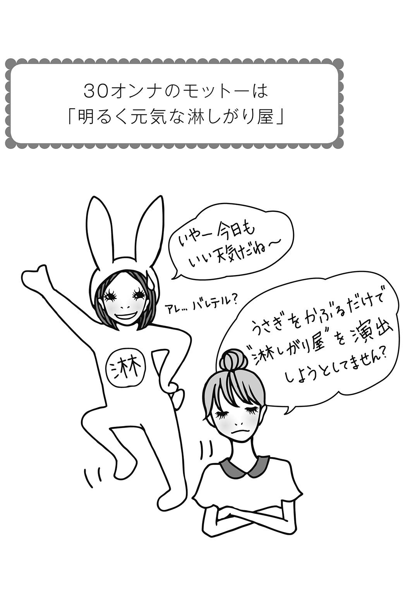
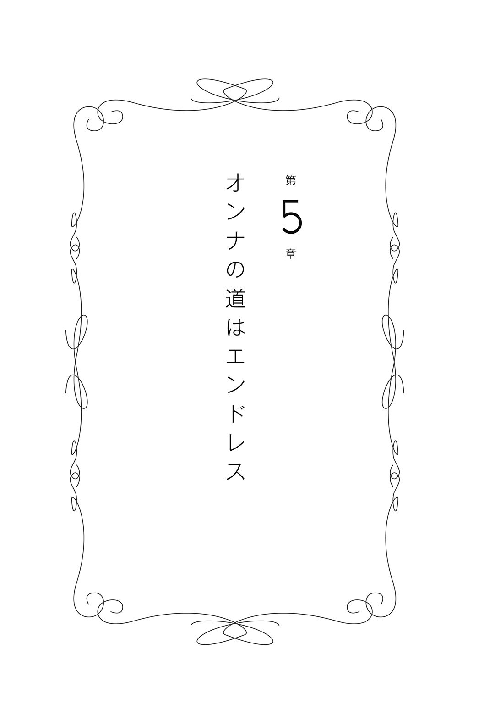
懺悔します。
入社１年目の頃、アタシはオトナに憧れて随分とイタい背伸びをしてました。
ワイン好きのＨ女史が言っていた言葉、
「重たい赤が好きなんですけど、○○ みたいなので何かあります？」
を丸暗記して、さも自分オリジナルのように使ってました。
バブル時代派手に遊んだ名残りで、今もオシャレオジサンの雰囲気があるＵ課長の真似をして、靴好きでもないのに、靴だけは常に上質な革を履いてました。
行きつけのお店は、いわゆる〝分かる人〟しか来ていないお店にしてました。
絵や骨董品も、良い（とされている）ものを愛でてました。
雑誌や会社の先輩を横目で見ては、さも分かった風になろうとしていました。
あぁ恥ずかしい。
でも、オトナになるって、そういう〝ホンモノを見る目〟ができることだと思っていました。というか、〝ホンモノを見る目がない人〟は、〝ニセモノのオトナ〟くらいに思っていました。
だから、もはや思い出せないが完全に誰かの受け売りで、
「セールをするようなブランドは〝ニセモノ〟だ」
なんて生意気を言っては、そういうブランドでは買わないようにしてました。
30 歳を過ぎた頃、遅ればせながらそれが間違ってたことに気付いたのです。
いつものようにバーで知ったかぶりのうんちくを垂れようとした瞬間、グラスに映った自分が目に入ったのだ。そこに映るアタシはまるで美しくなくて。
それどころか、アタシが最も恐れるイタい女だったのでした。
「お前、それ、なんでイタいって思ったワケ？」
残業ご飯をしながらそんな話をしたら、Ｋ先輩に聞かれた。
言いたくないことを言わせるオトコだなぁ、相変わらず。
アタシは渋々、「それはもちろん...アタシがみっともない猿真似オンナだったからです」と答えた。
だって、アタシがやってきたことはすべて、オリジナルじゃなかったから。Ｈ女史、Ｕ課長、雑誌、批評家などが〝いい〟ということを真似っコしているだけで、アタシ自身の価値観でもなんでもない。つまりアタシ自身には、ホンモノを見る目はまだ身についていないのに、分かったフリをしていた。
「それがとってもカッコ悪い...ってことにようやく気付いたんです」
アタシは正直な胸の内を答えた。
だが黙って聞いていたＫ先輩は、ビールを飲み干しながら、
実に予想外の言葉を発したのだった。
「あぁ、そっちか...」
へ？ Ｋ先輩、そっちってどっち？？
「あ...オレはてっきり、自分自身が〝ホンモノ〟のオトナでもないのに、上目線で、〝これはホンモノ〟だとか〝ニセモノ〟だとかって評するのって一体ナニサマなんだ？っていうほうのイタさだと思ったから」
過去の経験から分かる。
こういう時のＫ先輩って、大概正しいことを言っている。
アタシ自身に見る目があるかないかはどうでもいい話で、それ以前に、周りの人や物のことを〝ホンモノだ〟〝ニセモノだ〟と言う行為自体がイタいんじゃないかってことですよね。
餃子を食べるアタシの手が、固まったのは言うまでもない。
自分なりの価値観を持つのはすごく大事、ということに変わりはない。
自分のものさしを持つというか、他人や世間がどう言おうと、ブレることない自分なりの判断機軸を持って行動するのは、アタシが目指すところの30 オンナだ。
ある一定の年齢にもかかわらず、自分のものさしを持っていなくて、受け売りや猿真似ばかりなのはオトナとして素敵じゃない。普段ゲップとかして最低なＵ課長なのに、仕事でブレない姿を見るとカッコイイって思うし。
けれど、Ｋ先輩が言ったことこそがイタさの真の原因であったのだ。
〝ホンモノだ〟〝ニセモノだ〟という言葉の裏には、「自分は正しい目線を持っている」という奢りが感じられて恥ずかしい。
「だってさ、そのホンモノ、ニセモノってそもそもそれは誰が決めんの？ その判断者の価値観が絶対に正しいなんてことはなくない？」
若干、理屈っぽいＫ先輩の性格が滲む考え方だが、言っていることはよく分かる。
「合っているか間違っているかは人それぞれの価値観だけど、アタシはこういうものさしを持っています」で、いいってことですよね。
Ｋ先輩の話を聞いていて、思い出したことがある。
アタシがお嬢系私立中高一貫校出身とは初めに書いたが、そこでは、ホンモノのお嬢様は、自分のことを〝お嬢様〟とは言わなかった。今の環境以外を知らないから、逆に自分を〝お嬢様〟だなんてまるで思ってない。恥ずかしそうに〝世間知らずで〟と言うのだ。
それを聞いたとき、お嬢様学校に入学して浮かれた自分を、
「ああアタシって生粋の庶民なんだ」と思ったものだ。
それと同じこと。もし〝ホンモノ〟のオトナだったら、周囲の物や人のことを
「これはホンモノです」とかわざわざ言わない気がしてきた。
そんな傲慢なことをする人は〝ホンモノ〟じゃない。
自分の〝ものさし〟を他人様に言いふらす必要はなくて、「これ好き」「これ嫌い」は、自分の胸におさめておけばいいだけだから。
チャーハンを頬張るＫ先輩が、ちょっといつもよりイケて見える。
「Ｋ先輩って、実はホンモノの男なんじゃないですか？」
冗談っぽくしか言えなかったアタシに、Ｋ先輩は即答した。
「お前に言われても嬉しくない」
Ｋ先輩が、ホンモノの、生粋の、完全なる、ドＳなのは間違いない。
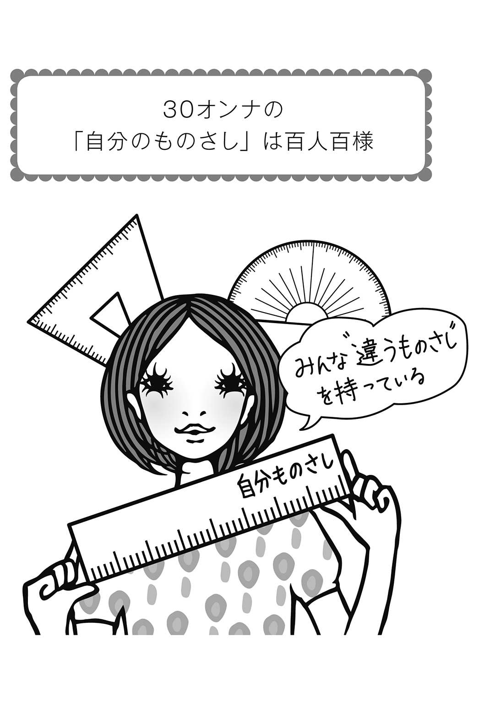
派遣社員のＬちゃん（24 歳）は恋の狩人だ。
大失恋して何も食べられなくなりトリガラのように痩せてしまったり、カラオケＢＯＸで朝まで大号泣に付き合ったこともあるが、それでもまたすぐに別の恋をする。完全なる恋愛至上主義。恋愛農耕民族のアタシには、考えられないような狩猟能力を持っている。
「っていうかＭＡＤさんの場合、種もまかず鍬も持たずに、縁側で〝どんな畑がいいかなぁ〟って農地を眺めてるだけじゃないですか。それじゃダメっすよ」
35 歳にして未だ白帯をつけているアタシからしてみると、Ｌちゃんは恋愛師範代だ。しかし、そんなＬちゃんの恋愛スタイルが変わった。
不倫を通過して以降、三股主義をとり始めた。
心境の変化を聞きたがるアタシに、Ｌちゃんが教授してくれた。
「ひどいオンナとか思わないでくださいねぇ。失恋するたびにＭＡＤさんにも迷惑掛けてきましたけど、三人同時に動けば、一人に振られてもあと二人いるから落ち込まないで済むって気づいたんですよ」
Ｌちゃん斬新だわ、その発想。
「それに...三人同時進行だと、長文メール打つ暇もないから、追いかけすぎることもないんです。のめりこみすぎて、妄想して勝手に舞い上がったり落ち込んだりしないで済む。...程よい距離で攻められるからか、ぶっちゃけ、三股主義にしてからのほうがモテるんですよねぇ」
なるほど。
センター受信を繰り返し、送信済みフォルダの推敲（まったく意味がない！）で時間を潰すアタシには、参考にしてあまりあるお教えだった。
「でも、二兎を追うものは一兎をも得ずと言わない？」
三股への抵抗感からＬちゃんの幸せが心配になり意見したら、バッサリ言い返されてしまった。
「ＭＡＤさんの場合、そもそも一兎もゲットできてないじゃないですか？」
...おっしゃる通りでございます。
恋愛の三股主義は、性格的にアタシには難しいが、さすがは元・優等生である。その教えを人生に応用することを思いついちゃいました。
名づけて〝人生の三股主義〟。
〝仕事〟を生き甲斐にするのが危険なのは、「仕事は保険」でも書いたとおりである。
けれど同様に、〝恋愛〟〝家族〟〝友人〟〝シュミ〟のいずれかを生き甲斐にするのも、いかがなものかと思う。恋愛が途切れない分、同性の友達がいない人や、〝子供〟を生き甲斐にしてのめりこんじゃってる既婚女性が、イタくないかって言ったら、ヤキモチ抜きにしてイタいと思うもの。それに、それが何であれ一つのことに必死に思い込んでしまうのは、上手くいかないことが起きた時、落ち込むから避けたほうがいい。ただでさえ年を重ねると落ち込みに弱くなるのだから。
以前、編集者トミーに聞かれたことがある。
「30 歳になると、仕事か結婚かの選択を迫られる気がするんです」
トミーにも言ったが、これは20 代ならではの大いなる勘違いだ。30 代だからこそ実感している。両者は二択ではなく、完全に別物だ。魚も肉もバランス良く食べないと健康に悪いのと同じこと。仕事も恋愛も、シュミも友人も、人生にはどれも必要なのだ。
そこで、Ｌちゃんに学んだ〝人生の三股主義〟が出番となる。
アタシ、開眼しました。30 オンナたるもの、三股（「本命」「愛人」「お気に入り」）を使い分けて人生の師範代を目指します！
「ＭＡＤさん。言っておきますが、三股には努力が必要ですからね。女性は比較的一途な性格だからか、意識しないと、つい本命に偏ってしまうんです」
Ｌちゃんの三股講義にも熱が入る。アタシは早速、実践してみることにした。
「本命」＝ 仕事
「愛人」＝ 友人
「お気に入り」＝ 趣味のパン作り
「せめてどこか一つにはオスを入れてください」
Ｌちゃんの指摘が耳に痛いが、今回は見逃してもらうとして、月曜から金曜まではどうしても仕事に追われてしまう。でもまぁ、本命だから一番長く時間をともにするのも悪くはないはずだ。
土日は基本、友人に会うことが多い。愛人扱いをして申し訳ないが、リラックスできるだけでなく、ちょっとした刺激がもらえる大事な時間である。
残るはお気に入りとの時間。Ｌちゃんが言うようにかなり努力をしないと、この時間を作ることは難しい。アタシは身体にムチを打って、毎週水曜の夜、「ステキ！ 無敵のパン教室」に通うことにした。
...ちょっと誰ですか。〝イタい視線〟発したの。
重ね重ね言いますが、無理して三股してるんですからね。
授業は毎週19 時半スタート。髪が落ちてこないようにまとめたり、丁寧に手を洗ったりしないといけないから、移動とあわせて、会社を18 時半には出なくてはならないのだが、アタシの場合、これが至難の業。
だがこれも、イケている30 オンナになるためだ。
仕方がないので水曜の朝は多少出社を早めたり、延ばせる仕事は翌日に回すなどして、17 時を過ぎたあたりからソワソワと帰る準備をはじめている。
やってみて思った。Ｌちゃんが言うように、三股主義って悪くない。
「お気に入り」との時間を作るため、「本命」との時間をより充実させるようになるし、「本命」で嫌なことがあっても、「愛人」との時間がそれを忘れさせてくれる。
何より、前のめりにならないからか、三者ともと良好な関係を築けている気がする。
我ながら、生き生きと過ごせているような気がする！
そんなアタシの変化に最初に気付いたのはＵ課長だった。
「ＭＡＤ、先週も早くなかったか？」
三股主義の鉄則。互いの存在を相手にバレないようにしなければならない。それがオトナのマナーというもの。
そうでしたっけ、ととぼけるアタシに、Ｕ課長はニヤニヤしながら言い放ったのだった。
「...お前、男できただろ？」
三股の効果、恐るべしである。
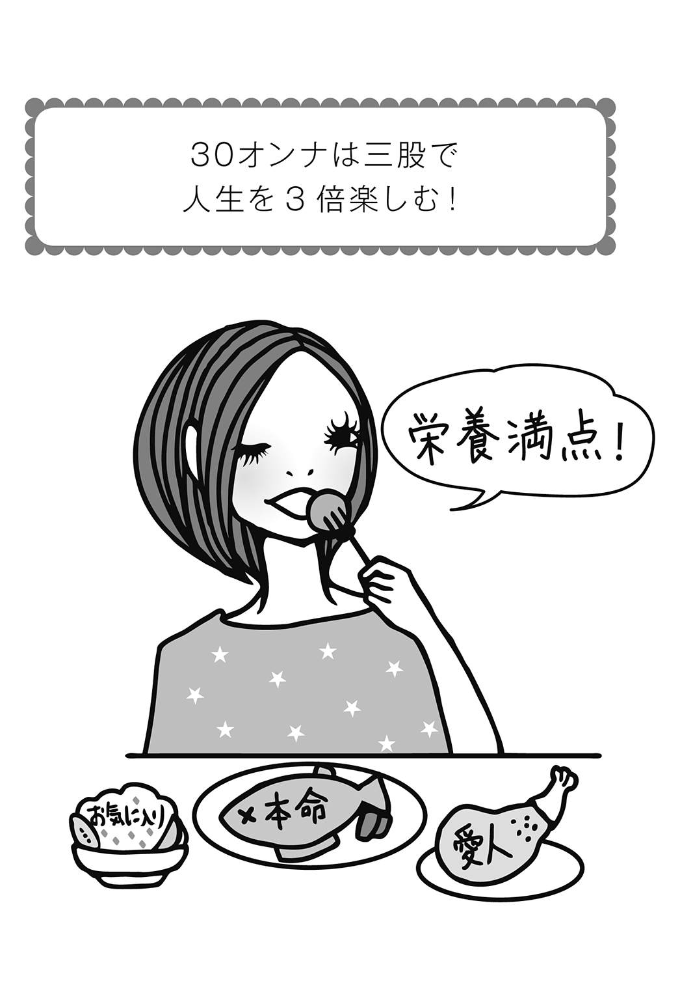
オトナになるまで、こんなに気持ちがいいものだなんて知らなかった。
何の話かって？
親孝行の話です。
親に誉められるのは勿論のこと、自分がした些細なことで親が喜んでくれると、自分が大きくなった気がして嬉しくなる。うちの母の場合、ご飯をご馳走するとめちゃくちゃ嬉しそうな顔をする。喜んでいる顔を見ていると、また連れて来てあげたいと思うし、何よりその瞬間、めちゃくちゃ気持ちがいい。
その一方で、自分の中に度々、親の残像を感じる。
たとえば、ふくらはぎと足の指。
白くてふくらはぎの中央部がなだらかに大きくなっている感じなんて、休みの日にソファで寝転んでいた父親の膝下の形にそっくりだし、甲に対して足の指が決して長くないのにツメだけは大きめなところが、母親の足先にソックリ。
ＤＮＡってすげぇ...ですよね。
それ以外にも、洗濯物のたたみ方だったり、食器の洗い方だったり、生活習慣的なところにも親の影響は感じられる。
電話を取るときの「ＭＡＤです」の口調とかほぼ母親と同じ。
でもそういう残像がいいことばかりだとは限らない。
正直に言うと、その残像に気付いてゾッとすることもある。
イラっとした時に相手をネチっと攻める言葉遣いが、母親がアタシを怒るときの言い回しに似ていたり。あいまいが苦手で何でもきっちり整理したがる父親に、仕事の進め方がそっくりだったり...。
子供心に「親のこういうところってイヤだなぁ」と思っていたところも、意図してないにもかかわらずアタシの中に取り込まれてしまっている。
「親の背中を見て子は育つ」とはよく言ったもので、良くも悪くもアタシという人間が、両親から多大なる影響を受けて構成されているのが分かる。
最も感じるのは、価値観への親の影響の大きさだ。
結婚はするもの。
子供は産むもの。
就職した会社で定年まで勤め上げるもの。
これってアタシ世代の価値観というより、団塊世代ちょっと上の、うちの親世代が持っている価値観だ。
けれど、それを常識としている人たちに育てられているから、完全に刷り込みをされていて、心底結婚がしたいワケでも、心底子供が欲しいワケでもないのに、結婚しないこととか子供を産まないことに、自動的に罪悪感を覚えてしまうのだ。
アタシ自身、今現在、転職に興味があるワケではないが、
そもそも〝職を変える〟ということに、どこか抵抗感があったりする。
これまでずっとアタシは、〝普通〟と呼ばれる価値観や世間体から外れることに怯えているのだと思っていた。でも実は「親に教えられた普通」がその正体だったのだ。
親孝行が気持ちいいことも知っているだけに、親の期待に応えたい自分もいて、〝親に教えられた普通〟がプレッシャーとなってしまうのだ。
さてどうしたものか。
これまでは金銭的に自立することが、〝自立〟なのだと思っていた。
精神的自立は、思春期の反抗期を経て、とっくにできていると思っていたから。
だけど、これだけ親の価値観を背後霊のように感じるってことは、精神的自立が果たせていないってことで...。
20 代のうちは親の残像を引きずっていても致し方ない部分がある。
だって20 歳で成人を迎えるまで20 年もの間、育ててもらってきたのだから。
でも30 歳を過ぎて自立できてないというのは、いかがなものかと。
それによく考えてみると、そもそも親世代というのは、男女雇用機会均等法以前に学んだ人たちだ。生涯雇用を無条件に信じていられていた人たち。
その価値観で生きていくには、今の社会は世知辛すぎるでしょう。
たまに仕事の話を親にすると、評価してくれる点が「え、そこ？」っていうくらいズレていたりするもん。
結婚だってそうだ。
お見合い全盛時代の常識を引きずって、今のコンカツ事情を乗り切れるわけがない。
会わずしてお見合い写真だけで結婚を決めていたなんて、下手したら今のネット系より大胆だったとも言えるけど。
いずれにしても、アタシたちと親世代では生活環境が全く異なるのは間違いない。にもかかわらず、勝手に残像に縛られて、うまくいかなかったときに親のせいにしたら、親だって可哀相ってものかもしれない。
親孝行は気持ちいいし、親は大事だけど、意識して距離を保ち自立しないと、お互いに窮屈になってしまう。
年齢を重ねたなりの親との距離感を、30 オンナとしては見つめ直すべきだろう。
アタシはこれから、何かに直面した時、
「そうしたいのは自分なのか、それとも親が言っていたからか」
心の声に耳を傾けてみることにするぞぉ。
手始めはチーズケーキかなぁ。うちの母はレアチーズケーキが好きだ。
「やっぱりチーズケーキはレアよね」
何十回、何百回となく聞いたフレーズだから、ついアタシはチーズケーキを食べるとき、焼いたほうではなくレアのほうに手を伸ばしてしまう。
でも本当にアタシは焼いたものよりレアが好きなんだろうか。
実は焼いたチーズケーキのほうが好きなのではなかろうか...。
心の声に耳を傾け、考えてみたい。
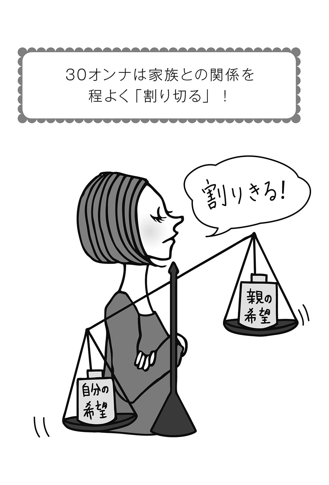
女性ならみんな、自分が女性ホルモンに支配されてるのを自覚していると思う。
仕事でイラっとして、しかもそれを隠せない時がある。
そういう時アタシは、家に帰ってめちゃくちゃ落ち込む。
大体、その数日後に生理になったりするから、アタシの人格とか知性って、結局のところはホルモンバランスに敵わないのだなぁなんて、これまた悲しい気持ちになったりする。だけど生理がある以上、どうしようもないこと。
できる範囲で上手く付き合うしかないワケで。
「今日生理なんで、イライラしても大目に見てくださいね」
と職場で言うのも気がひけるし。
ちなみに、職場で生理だと言いづらい理由として一番大きいのは、職場というのが、安定的に仕事をこなさなければならない場だからだと思う。
一つの仕事に多くの人が関わるだけに、精神的に揺れ幅が多い人との仕事は、周囲がその揺れ幅に合わせなければならず、みんなを疲れさせてしまうのだ。
これはもちろん、生理に限ったことではないし、女性に限ったことでもない。
男女問わず、理由がなんであれ、精神的に不安定な人は、仕事人としてあまりよろしくないということだ。
かくいうアタシは、生理うんぬん以前に、自分の気持ちを周囲に話すことで頭を整理するタイプ。結果として周囲から見ると、これまたアップダウンしちゃっている、よろしくない仕事人の代表で、お恥ずかしい限り。
「自覚してるなら、改めてもいいんだからな」
よく、Ｕ課長にそこはかとなく注意される。アタシだって、このままでいいなんて思っていない。オトナとして、極力自分で上手く対処して、改善できることは改善していきたいと切実に願っている。
自分で自分をコントロールするすべを、30 オンナなら持っていたいですから。
そんな話をしていたらＴ代に言われた。
「子供が産まれるとさ、自分のアップダウンと向き合う機会がホント増えるわよ。しかも相手が、こちらの都合なんて分かってくれない赤ん坊だったりするワケじゃない？ 産後しばらくはホルモンバランスもガタガタだし。だからといって子供にイライラをぶつけるワケにもいかず、己の至らなさと日々向き合わざるを得ない。これってしんどいわよぉ！」
想像に難くない。それは大変だろう。
〝子供を産むと人として成長する〟と聞くけれど、もしかしたら、それは自分をコントロールする術を強制的に身につけさせられる場面に多々遭遇するからなのかもしれない。アタシみたいな未熟者には果てしなく遠い道のり。
「Ｔ代は、どうしてるの、そういう時？」
アタシの目から見ると、Ｔ代は急に泣き出した子供にも優しくて、自分のペースよりも子供のペースを優先するとっても素敵なママなのだ。母性本能って言われてしまうと真似できないが、何かここにヒントが隠されている気がした。
「ダイエットと同じよ」
どういうこと？
「私、だてにダイエット人生を送ってなくてさ。食欲が湧いてどうしようもない瞬間が来ると、とりあえず10 、数を数えることにしてるの」
どこかで聞いたことがある。
人間の欲というのは10 秒程度でおさまるから、食欲・物欲・性欲などが湧き上がってどうしようもないときに、じっと10 数えることに集中すると、欲がおさまるらしい。
なるほど、〝短気は損気〟と言うけれど、確かに、短気を起こし思慮に欠ける行動をするのが一番よくない。となると、とりあえず10 秒時間を取り、〝間〟を空けることは、自分をコントロールするうえで重要な秘訣かもしれない。
要は、色んなことを「待てる」かどうかだと思う。
現役復帰したテニスプレイヤーのクルム伊達公子選手が「若い頃に比べて、試合で〝待てる〟ようになった」とテレビのインタビューで語っていた。
それが、体力的には衰えているはずなのに、若い頃よりも強くなったと実感している点だと。世界の伊達選手だって若い頃は待てなかったのだから、アタシのような凡人が、20 代の頃、焦ったり、前のめりになったりしてしまいがちだったのは、致し方ないだろう。
でも30 代になったからには、「待てる」人になりたいものだ。
問題が起きて心配性のアタシが顔を出しても、焦る前に、ちょっと「待つ」。
相手のせいで事態が悪化してしまっても、言葉を発する前に、ちょっと「待つ」。
すべてを終わりにしたくなっても、実行する前に、ちょっと「待つ」。
そうすると、いたずらに相手を責めなくなる気がする。
イラっとしても、自分の感情を物理的に説明できるようになるだろう。
感謝の言葉を言えるようにもなるし、Ｔ代曰く、これは旦那を手のひらで転がす心得としてもかなり使える技らしい。
「同じく、恋愛においても〝待てるオンナ〟は、かなりポイント高いわよ」
確かに。
いいな、と思う相手に対して、間髪いれずに攻め込むと、大概失敗するもんなぁ。
狭いニッポン、そんなに急いでどこへ行く。
アタシは、ゆったりと「待てる」オンナを志すことを固く誓ったのだった。
あれから２ヵ月。
まだまだ完璧に実践できてはいないが、さすがは元・優等生のアタシ。かなり〝待てる〟ようになってきた。
Ｕ課長からの誉め言葉も大人しく待っているし、面倒見まくりの新人君からの感謝の言葉もじっと待つことができている。
いい感じ。だから大丈夫。
運命の人も、アタシはいつまでだって待っていられる...のだ。
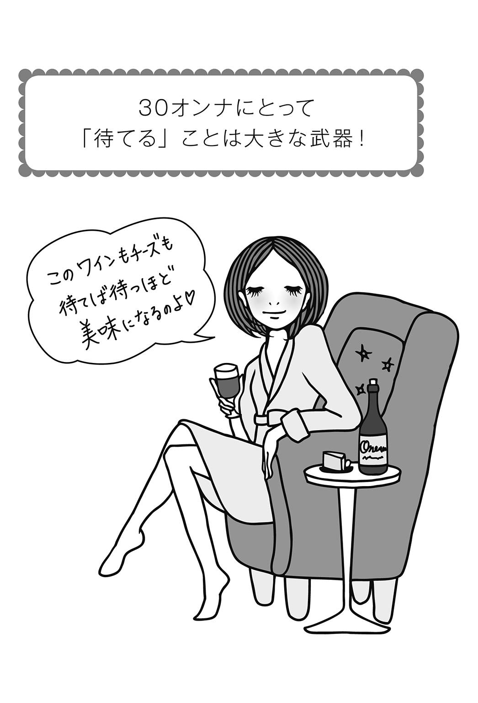
自分ってやつを信じてあげてもいい
35 歳を目前にした頃、私はかなり不調だった。
東日本大震災の影響が大きかった。結婚もせず子供もいない私には、自分の命にかえても守りたい存在がないのだということに気付いてしまった。そしてそれらを犠牲にしてまで打ち込んできた仕事というものが、こういう有事に、恐ろしく無力で、所詮机上で進んでいるものなのだということも思い知らされた。で、ふと思ってしまった。
私は、なんのために生きているのだろうと。
この問いにぶちあたったことのある30 代独身女は少なくないだろう。「どこから来て、どこへ行くのか」「何のために生きて死ぬのか」。これは太古の昔からヒトが対峙してきたところ。信じるところの宗教がある人は迷わないのだろうが、私のようにフラフラ生きてきたタイプは、この問いにつまずくと、どうしようもない思考のるつぼに落ち込んでしまう。
実際、仕事のやる気も失い、恋愛にも意欲が湧かなくなってしまった。マズい。焦った私は、どうにか自分なりに、この問いの答えを見つけてみることにした。人生の先達に話も聞いた。本も読んだ。とにかく考えた。そして、ようやく自分なりの答えを見つけたのだった。
「そもそも人は目的をもってこの世に生まれてきていない。死ぬときに、〝あー、楽しかった。やりたいことを存分にやった〟と思えればよい。最初の問いに強引に答えるとするならば、〝人は楽しむために生きている〟」
単純だが、そう決めた瞬間から、私の人生は楽しいものになった。
編集者トミーから、この本の話をされたのは、ちょうどその頃だった。正直、初めは書くことにためらいがあった。副題にある「イタくないオトナになるための...」。これはリアル30 代独身女である私が心から願うところであるが、所詮イタい女である私が何を書いたところで、説得力のカケラもない。
「実践できてない人間が書いていいの？ ただの悪戦苦闘記になっちゃわない？」
と、トミーに何度も聞いてしまった。それに、「私はこんなにもイタい女なんです」と、自ら露呈するようで、つい我が身の保身に走りたくなった。
それでも書くことにしたのは、書くことを楽しめそうだと思ったから。そして、トミーが30 歳になることを本当に怖がっていたからだ。
思い起こせば、６年前の私も、怯えていた。「今が一番いい時だから、人生を楽しんで」と先輩女子に言われても、信じる余裕がなかった。結果を出したくて焦っていた。そんな私の昔話を、「ＭＡＤさんもそうだったんですねぇ」と一生懸命聞いているトミーが、次第に、かつての自分のように感じられてきた。
そういえば、いつから私は、焦らなくなってきたのだろう。
記憶と思考をたどってみたら、何か分かるのではないかと、自分でも興味を持った。
こうして〝アタシ〟こと〝ＭＡＤ ＫＡＯＲＩ〟が生まれたのだった。序章に書いたように、登場人物は、私が見聞きしたエピソードを元に、キャラクター化している。完全なるノンフィクションとは言えない部分もあるが、基本35 歳の迷いや不安のありのままを、正直に書かせていただいた。
そんな原稿だから、途中でトミーから修正依頼が入った。「ＭＡＤさんには、必要以上にジタバタしていてもらいたくないです。あくまで客観的で余裕があるオトナな感じがいいんです。ＭＡＤさんには憧れたいのです」。これは29 歳トミーの、編集を離れた一人の女性としての本音だったと思う。30 歳になることに怯えるトミーにしてみれば、原稿に描かれる35 歳の私の現実が、思っていたよりも淋しいものだったのだろう。29 歳で思い悩んでいることが、30 歳を過ぎても本質的には解決するものではないということを突きつけられたようで、しんどかったのかもしれない。「憧れたい」というトミーは、作中の〝ＭＡＤ〟に救いを求めていた。それでもジタバタした本になったのは、私のような時代を経て40 代を軽やかに過ごす吉川デスクの、「憧れなくていい。この本を読んだ人が、〝私もボンヤリしていたらＭＡＤさんみたいになってしまうんだ〟と気付いてくれればいい」という言葉があったから。
私は、かなりボンヤリ35 歳を迎えてしまった。
〝結婚したくない〟という明確な意志もないのに。
〝一生仕事をしたい〟という強い希望もないのに。なんとなく過ごしてきてしまった。
焦る20 代女子に役立つのであれば、私のボンヤリと、そこから急ピッチで行われた試行錯誤を、赤裸々に伝えるのも無駄ではないのではないか。
だからこそ、今も実践の途中なだけに、「こうすればすべて解決します！」というような明快な答えが載った本にはならなかったけれど、手がかりは導けたのではないかと思っている。
この本を読み直してみると、私は、たびたび「普通」という言葉を使っている。
履歴書的には満点の私が、いかに世間体や、良識的な生き方の呪縛にとらわれてきたかが分かる表現だ。『元・優等生病』。要は、ありのままの自分に自信がないのだ。だから必要以上に、世間の目を気にしてしまう。以前の私は、自分の意見が評価されなかったり、自分の生き方を周囲が理解してくれないと、存在が否定されたように感じられ、傷ついていた。
でも、生まれ落ちて35 年、やっと自分のものさしにも自信がついてきたようだ。
20 代であがいた甲斐もあり、ようやく世間や他人とは違う〝自分〟に慣れてきたと言ったほうがいいのかもしれない。もう少し自分ってやつを信じてあげてもいいのではないか、と思えるようになってきた。
書き終えて思ったことがある。35 歳の私は、20 代と違ってそのジタバタごと楽しめるようになっていた。実際、とっても楽しく書いてしまった。
そして、これから迎える40 代が、怖くないと言ったらウソになるけれど、だてに30 代をあがいておらず、迎え撃つ心の準備もできてきた気がする。
既婚だとか独身だとか、実は関係なくて、自分の足でちゃんと自分の人生を歩めているかがオトナになるための大事なことだと分かったから。
最後に、30 歳になることに怯えている、かつての私でもある20 代女性たちに重ねて伝えたい。現実を知った30 代は、想像しているよりもずっと楽しいから大丈夫。
だから残された20 代、安心して、思いっきりジタバタしながら、自分のものさしを見つけちゃってください。
最後までお読みいただき、有難うございました。
ＭＡＤ ＫＡＯＲＩ
ＭＡＤ ＫＡＯＲＩ
１９７６年８月生まれ。神奈川県出身。
２０００年、早稲田大学教育学部卒業後、マスコミ業界の会社に勤務。
２００７年、映画化された『あしたの私のつくり方』の原作（真戸 香名義）にて小説家デビュー。以降も、会社員を続けながら執筆活動を行う。
企画・編集 富岡由郁子
装丁・デザイン 池田紀久江
イラスト まえだゆか
編集担当 吉川亜香子
30 オンナ入門
著者 ＭＡＤ ＫＡＯＲＩ
発行人 黒川裕二
発行所 株式会社 主婦と生活社
〒１０４｜ ８３５７
東京都中央区京橋３｜ ５｜ ７
制作所 株式会社デジタルディレクターズ
(C) MAD KAORI 2013